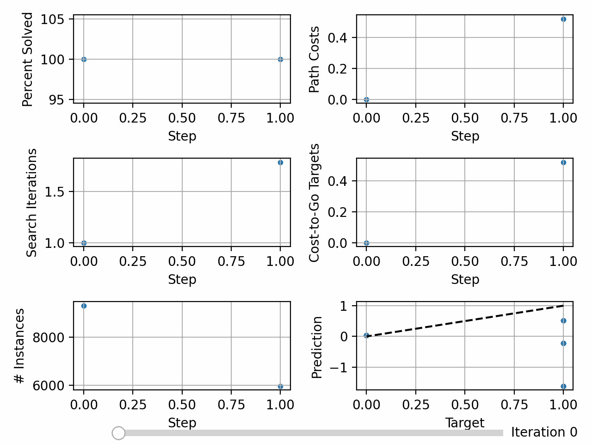

Balancing Training Data Difficulty¶
Although problem instance generation need not use the specified number of steps when generating problem instances, some implementations that do can use the number of steps used to generate a instance as an approximation of the difficulty of that problem instance. If the maximum number of steps is too small, then the heuristic function will not generalize to more difficult problems. If the maximum number of steps is too large, then the heuristic function may not see enough solved instances during training, resulting in increasingly large cost-to-go targets.
To address this, the maximum number of steps can be initialized to 1 and doubled everytime the average percentage of problems solved reached 50% until a pre-determined absolute maximum number of steps is reached (see [AS26]).
We will experiment with the 6x6 sliding tile puzzle (i.e. the 35-puzzle) when training with a maximum number of steps of 10,000.
Without Balancing¶
deepxube train --domain npuzzle.6 --fn heurv,resnet_fc.200H_2B_bn --pathfind graph --up up_rl.10000sm_100up_100sitrs_lhbl_2p --tr tr_h.200bs_5000maxit --dir tutorial/npuzzle6/10000sm/
/opt/miniconda3/envs/deepxube/bin/deepxube train --domain npuzzle.6 --fn heurv,resnet_fc.200H_2B_bn --pathfind graph --up up_rl.10000sm_100up_100sitrs_lhbl_2p --tr tr_h.200bs_5000maxit --dir tutorial/npuzzle6/10000sm/
device: cpu, devices: [], on_gpu: False
NNetInputType: <class 'deepxube.base.nnet_input.HasFlatSGIn.FlatSGConcrete'> (name: ('npuzzle', 'flat_sg'))
HeurVNNetParC()
ResnetFCHeur(
(one_hots): ModuleList(
(0): OneHot()
)
(heur): Sequential(
(0): Linear(in_features=1296, out_features=200, bias=True)
(1): ResnetModel(
(blocks): ModuleList(
(0-1): 2 x ModuleList(
(0): FullyConnectedModel(
(layers): ModuleList(
(0): ModuleList(
(0): Linear(in_features=200, out_features=200, bias=True)
(1): BatchNorm1d(200, eps=1e-05, momentum=0.1, affine=True, track_running_stats=True)
(2): ReLU()
)
(1): ModuleList(
(0): Linear(in_features=200, out_features=200, bias=True)
(1): BatchNorm1d(200, eps=1e-05, momentum=0.1, affine=True, track_running_stats=True)
(2): LinearAct()
)
)
)
)
)
(act_fns): ModuleList(
(0-1): 2 x ReLU()
)
)
(2): Linear(in_features=200, out_features=1, bias=True)
)
)
Number of trainable parameters: 422,001
(name: heurv, nnet_input_name: ('npuzzle', 'flat_sg'))
NPuzzle(dim=6) (name: npuzzle)
PFNsHeurVC(heurv=<function NNetPar.get_nnet_fn.<locals>.nnet_fn at 0x120bb11b0>)
GraphSearchHeurNodeActsEnum(batch_size=1, weight=1.0, eps=0.0) (name: graph_v)
UpdateHeurVRLKeepGoal, UpArgs(procs=2, step_max=10000, search_itrs=100, up_itrs=100, up_gen_itrs=None, rb=0, up_batch_size=100, nnet_batch_size=20000, sync_main=False, v=False), UpRLArgs(ub_heur_solns=False, lhbl=True) (name: up_rl_v)
Initializing data buffer with max size 20,000
Input array sizes:
index: 0, dtype: uint8, shape: (36,)
index: 1, dtype: float64, shape: ()
Data buffer initialized. Time: 8.511543273925781e-05
TrainHeur, TrainArgs(batch_size=200, max_itrs=5000, balance_steps=False, loss_thresh=inf, checkpoint=0, grad_accum=1, display=0) (name: tr_h)
Getting Data - itr: 0, update_num: 0, targ_update: 0, num_gen: 20,000
Times - steps_gen: 0.03, inst_info: 0.00, inst_add: 0.00, backup: 0.02, get_tr_data: 0.00, to_np: 0.01, update_perf: 0.00, put: 0.00, gc: 0.20, ->get_states: 1.96, ->pathfinding: 0.50, Tot: 2.70
(get_states): sample_goalstate_goal_pairs: 0.00, random_walk: 1.96, Tot: 1.96
(pathfinding): root: 0.00, pop: 0.00, is_solved: 0.01, goal: 0.00, expand: 0.16, nodes: 0.18, up_inst: 0.04, heur: 0.00, filt: 0.05, cost: 0.01, pushpop: 0.02, edges_next: 0.01, set_next: 0.00, Tot: 0.50
Data - %solved: 0.50, path_costs: 1.889, search_itrs: 11.111, cost-to-go (mean/min/max): 1.00/0.00/2.00
Train - itrs: 100, loss: 1.52E-02, targ_updated: True
Times - up_start: 0.01, up_data: 2.02, up_end: 0.27, data_samp: 0.00, train: 0.30, save_net: 0.00, save_status: 0.00, Tot: 2.59
Getting Data - itr: 100, update_num: 1, targ_update: 1, num_gen: 20,000
Times - steps_gen: 0.00, inst_info: 0.00, inst_add: 0.00, update_perf: 0.00, backup: 0.02, get_tr_data: 0.00, to_np: 0.01, put: 0.00, gc: 0.26, ->get_states: 1.89, ->pathfinding: 1.02, Tot: 3.20
(get_states): sample_goalstate_goal_pairs: 0.00, random_walk: 1.89, Tot: 1.89
(pathfinding): root: 0.00, pop: 0.00, is_solved: 0.02, goal: 0.00, expand: 0.13, nodes: 0.31, up_inst: 0.04, heur: 0.39, filt: 0.06, cost: 0.01, pushpop: 0.03, edges_next: 0.01, set_next: 0.00, Tot: 1.02
Data - %solved: 1.52, path_costs: 3.222, search_itrs: 26.000, cost-to-go (mean/min/max): 1.90/0.00/3.27
Train - itrs: 100, loss: 3.22E-02, targ_updated: True
Times - up_start: 0.00, up_data: 1.49, up_end: 0.27, data_samp: 0.00, train: 0.29, save_net: 0.00, save_status: 0.00, Tot: 2.05
Getting Data - itr: 200, update_num: 2, targ_update: 2, num_gen: 20,000
Times - steps_gen: 0.00, inst_info: 0.00, inst_add: 0.00, update_perf: 0.00, backup: 0.02, get_tr_data: 0.00, to_np: 0.01, put: 0.00, gc: 0.24, ->get_states: 1.92, ->pathfinding: 0.97, Tot: 3.15
(get_states): sample_goalstate_goal_pairs: 0.00, random_walk: 1.92, Tot: 1.92
(pathfinding): root: 0.00, pop: 0.00, is_solved: 0.02, goal: 0.00, expand: 0.14, nodes: 0.25, up_inst: 0.04, heur: 0.38, filt: 0.06, cost: 0.01, pushpop: 0.03, edges_next: 0.01, set_next: 0.00, Tot: 0.97
Data - %solved: 0.51, path_costs: 1.900, search_itrs: 8.400, cost-to-go (mean/min/max): 2.81/0.00/4.13
Train - itrs: 100, loss: 1.77E-02, targ_updated: True
Times - up_start: 0.00, up_data: 1.47, up_end: 0.26, data_samp: 0.00, train: 0.37, save_net: 0.00, save_status: 0.00, Tot: 2.10
Getting Data - itr: 300, update_num: 3, targ_update: 3, num_gen: 20,000
Times - steps_gen: 0.00, inst_info: 0.00, inst_add: 0.00, update_perf: 0.00, backup: 0.02, get_tr_data: 0.00, to_np: 0.01, put: 0.00, gc: 0.27, ->get_states: 2.37, ->pathfinding: 1.02, Tot: 3.70
(get_states): sample_goalstate_goal_pairs: 0.00, random_walk: 2.37, Tot: 2.37
(pathfinding): root: 0.00, pop: 0.00, is_solved: 0.02, goal: 0.00, expand: 0.13, nodes: 0.31, up_inst: 0.04, heur: 0.39, filt: 0.06, cost: 0.01, pushpop: 0.04, edges_next: 0.01, set_next: 0.00, Tot: 1.02
Data - %solved: 0.51, path_costs: 1.359, search_itrs: 2.513, cost-to-go (mean/min/max): 3.69/0.00/4.95
Train - itrs: 100, loss: 1.09E-02, targ_updated: True
Times - up_start: 0.00, up_data: 1.73, up_end: 0.27, data_samp: 0.00, train: 0.29, save_net: 0.00, save_status: 0.00, Tot: 2.29
Getting Data - itr: 400, update_num: 4, targ_update: 4, num_gen: 20,000
Times - steps_gen: 0.00, inst_info: 0.00, inst_add: 0.00, update_perf: 0.00, backup: 0.02, get_tr_data: 0.00, to_np: 0.01, put: 0.00, gc: 0.28, ->get_states: 1.97, ->pathfinding: 1.04, Tot: 3.32
(get_states): sample_goalstate_goal_pairs: 0.00, random_walk: 1.97, Tot: 1.97
(pathfinding): root: 0.00, pop: 0.00, is_solved: 0.02, goal: 0.00, expand: 0.26, nodes: 0.20, up_inst: 0.04, heur: 0.40, filt: 0.06, cost: 0.01, pushpop: 0.04, edges_next: 0.01, set_next: 0.00, Tot: 1.04
Data - %solved: 0.50, path_costs: 5.500, search_itrs: 47.000, cost-to-go (mean/min/max): 4.61/0.00/5.83
Train - itrs: 100, loss: 1.21E-02, targ_updated: True
Times - up_start: 0.00, up_data: 1.55, up_end: 0.26, data_samp: 0.00, train: 0.29, save_net: 0.00, save_status: 0.00, Tot: 2.11
Getting Data - itr: 500, update_num: 5, targ_update: 5, num_gen: 20,000
Times - steps_gen: 0.00, inst_info: 0.00, inst_add: 0.00, update_perf: 0.00, backup: 0.02, get_tr_data: 0.00, to_np: 0.01, put: 0.00, gc: 0.22, ->get_states: 2.31, ->pathfinding: 1.28, Tot: 3.84
(get_states): sample_goalstate_goal_pairs: 0.00, random_walk: 2.31, Tot: 2.31
(pathfinding): root: 0.00, pop: 0.00, is_solved: 0.02, goal: 0.00, expand: 0.21, nodes: 0.23, up_inst: 0.04, heur: 0.60, filt: 0.09, cost: 0.02, pushpop: 0.04, edges_next: 0.01, set_next: 0.00, Tot: 1.28
Data - %solved: 0.00, path_costs: 0.000, search_itrs: 0.000, cost-to-go (mean/min/max): 5.51/2.46/6.76
Train - itrs: 100, loss: 1.74E-02, targ_updated: True
Times - up_start: 0.00, up_data: 1.94, up_end: 0.15, data_samp: 0.00, train: 0.34, save_net: 0.00, save_status: 0.00, Tot: 2.45
Getting Data - itr: 600, update_num: 6, targ_update: 6, num_gen: 20,000
Times - steps_gen: 0.00, inst_info: 0.00, inst_add: 0.00, update_perf: 0.00, backup: 0.02, get_tr_data: 0.00, to_np: 0.01, put: 0.00, gc: 0.21, ->get_states: 1.92, ->pathfinding: 1.26, Tot: 3.42
(get_states): sample_goalstate_goal_pairs: 0.00, random_walk: 1.92, Tot: 1.92
(pathfinding): root: 0.00, pop: 0.00, is_solved: 0.02, goal: 0.00, expand: 0.15, nodes: 0.29, up_inst: 0.04, heur: 0.59, filt: 0.08, cost: 0.02, pushpop: 0.04, edges_next: 0.01, set_next: 0.00, Tot: 1.26
Data - %solved: 0.00, path_costs: 0.000, search_itrs: 0.000, cost-to-go (mean/min/max): 6.48/3.59/7.75
Train - itrs: 100, loss: 9.28E-03, targ_updated: True
Times - up_start: 0.00, up_data: 1.63, up_end: 0.29, data_samp: 0.00, train: 0.40, save_net: 0.00, save_status: 0.00, Tot: 2.33
Getting Data - itr: 700, update_num: 7, targ_update: 7, num_gen: 20,000
Times - steps_gen: 0.00, inst_info: 0.00, inst_add: 0.00, update_perf: 0.00, backup: 0.02, get_tr_data: 0.00, to_np: 0.01, put: 0.00, gc: 0.22, ->get_states: 1.98, ->pathfinding: 1.11, Tot: 3.35
(get_states): sample_goalstate_goal_pairs: 0.00, random_walk: 1.98, Tot: 1.98
(pathfinding): root: 0.00, pop: 0.00, is_solved: 0.02, goal: 0.00, expand: 0.36, nodes: 0.12, up_inst: 0.04, heur: 0.44, filt: 0.07, cost: 0.02, pushpop: 0.04, edges_next: 0.01, set_next: 0.00, Tot: 1.11
Data - %solved: 0.00, path_costs: 0.000, search_itrs: 0.000, cost-to-go (mean/min/max): 7.37/4.61/8.61
Train - itrs: 100, loss: 1.24E-02, targ_updated: True
Times - up_start: 0.00, up_data: 1.62, up_end: 0.25, data_samp: 0.00, train: 0.36, save_net: 0.00, save_status: 0.00, Tot: 2.25
Getting Data - itr: 800, update_num: 8, targ_update: 8, num_gen: 20,000
Times - steps_gen: 0.00, inst_info: 0.00, inst_add: 0.00, update_perf: 0.00, backup: 0.02, get_tr_data: 0.00, to_np: 0.01, put: 0.00, gc: 0.23, ->get_states: 2.14, ->pathfinding: 1.04, Tot: 3.44
(get_states): sample_goalstate_goal_pairs: 0.00, random_walk: 2.14, Tot: 2.14
(pathfinding): root: 0.00, pop: 0.00, is_solved: 0.02, goal: 0.00, expand: 0.26, nodes: 0.16, up_inst: 0.04, heur: 0.42, filt: 0.06, cost: 0.02, pushpop: 0.04, edges_next: 0.01, set_next: 0.00, Tot: 1.04
Data - %solved: 0.00, path_costs: 0.000, search_itrs: 0.000, cost-to-go (mean/min/max): 8.26/7.17/9.48
Train - itrs: 100, loss: 1.86E-02, targ_updated: True
Times - up_start: 0.00, up_data: 1.71, up_end: 0.19, data_samp: 0.00, train: 0.30, save_net: 0.00, save_status: 0.00, Tot: 2.21
Getting Data - itr: 900, update_num: 9, targ_update: 9, num_gen: 20,000
Times - steps_gen: 0.00, inst_info: 0.00, inst_add: 0.00, update_perf: 0.00, backup: 0.02, get_tr_data: 0.00, to_np: 0.01, put: 0.00, gc: 0.23, ->get_states: 1.91, ->pathfinding: 0.96, Tot: 3.14
(get_states): sample_goalstate_goal_pairs: 0.00, random_walk: 1.91, Tot: 1.91
(pathfinding): root: 0.00, pop: 0.00, is_solved: 0.02, goal: 0.00, expand: 0.19, nodes: 0.20, up_inst: 0.04, heur: 0.38, filt: 0.06, cost: 0.01, pushpop: 0.04, edges_next: 0.01, set_next: 0.00, Tot: 0.96
Data - %solved: 1.00, path_costs: 1.874, search_itrs: 12.207, cost-to-go (mean/min/max): 9.11/0.00/10.44
Train - itrs: 100, loss: 8.86E-02, targ_updated: True
Times - up_start: 0.00, up_data: 1.47, up_end: 0.28, data_samp: 0.00, train: 0.32, save_net: 0.00, save_status: 0.00, Tot: 2.07
Getting Data - itr: 1000, update_num: 10, targ_update: 10, num_gen: 20,000
Times - steps_gen: 0.00, inst_info: 0.00, inst_add: 0.00, update_perf: 0.00, backup: 0.02, get_tr_data: 0.00, to_np: 0.01, put: 0.00, gc: 0.22, ->get_states: 1.77, ->pathfinding: 1.06, Tot: 3.07
(get_states): sample_goalstate_goal_pairs: 0.00, random_walk: 1.77, Tot: 1.77
(pathfinding): root: 0.00, pop: 0.00, is_solved: 0.02, goal: 0.00, expand: 0.30, nodes: 0.17, up_inst: 0.04, heur: 0.40, filt: 0.06, cost: 0.01, pushpop: 0.03, edges_next: 0.01, set_next: 0.00, Tot: 1.06
Data - %solved: 0.50, path_costs: 0.707, search_itrs: 1.707, cost-to-go (mean/min/max): 9.97/0.00/11.46
Train - itrs: 100, loss: 2.48E-02, targ_updated: True
Times - up_start: 0.00, up_data: 1.48, up_end: 0.23, data_samp: 0.00, train: 0.28, save_net: 0.00, save_status: 0.00, Tot: 2.01
Getting Data - itr: 1100, update_num: 11, targ_update: 11, num_gen: 20,000
Times - steps_gen: 0.00, inst_info: 0.00, inst_add: 0.00, update_perf: 0.00, backup: 0.02, get_tr_data: 0.00, to_np: 0.01, put: 0.00, gc: 0.25, ->get_states: 1.96, ->pathfinding: 0.94, Tot: 3.18
(get_states): sample_goalstate_goal_pairs: 0.00, random_walk: 1.96, Tot: 1.96
(pathfinding): root: 0.00, pop: 0.00, is_solved: 0.02, goal: 0.00, expand: 0.31, nodes: 0.08, up_inst: 0.04, heur: 0.37, filt: 0.06, cost: 0.01, pushpop: 0.04, edges_next: 0.01, set_next: 0.00, Tot: 0.94
Data - %solved: 0.00, path_costs: 0.000, search_itrs: 0.000, cost-to-go (mean/min/max): 10.79/1.17/12.22
Train - itrs: 100, loss: 7.46E-02, targ_updated: True
Times - up_start: 0.00, up_data: 1.48, up_end: 0.26, data_samp: 0.00, train: 0.28, save_net: 0.00, save_status: 0.00, Tot: 2.03
Getting Data - itr: 1200, update_num: 12, targ_update: 12, num_gen: 20,000
Times - steps_gen: 0.00, inst_info: 0.00, inst_add: 0.00, update_perf: 0.00, backup: 0.02, get_tr_data: 0.00, to_np: 0.01, put: 0.00, gc: 0.18, ->get_states: 2.05, ->pathfinding: 1.03, Tot: 3.29
(get_states): sample_goalstate_goal_pairs: 0.00, random_walk: 2.05, Tot: 2.05
(pathfinding): root: 0.00, pop: 0.00, is_solved: 0.02, goal: 0.00, expand: 0.23, nodes: 0.22, up_inst: 0.04, heur: 0.39, filt: 0.06, cost: 0.01, pushpop: 0.04, edges_next: 0.01, set_next: 0.00, Tot: 1.03
Data - %solved: 0.51, path_costs: 2.778, search_itrs: 8.000, cost-to-go (mean/min/max): 11.61/0.00/13.04
Train - itrs: 100, loss: 2.13E-02, targ_updated: True
Times - up_start: 0.00, up_data: 1.61, up_end: 0.23, data_samp: 0.00, train: 0.29, save_net: 0.00, save_status: 0.00, Tot: 2.13
Getting Data - itr: 1300, update_num: 13, targ_update: 13, num_gen: 20,000
Times - steps_gen: 0.00, inst_info: 0.00, inst_add: 0.00, update_perf: 0.00, backup: 0.02, get_tr_data: 0.00, to_np: 0.01, put: 0.00, gc: 0.24, ->get_states: 1.93, ->pathfinding: 0.96, Tot: 3.15
(get_states): sample_goalstate_goal_pairs: 0.00, random_walk: 1.93, Tot: 1.93
(pathfinding): root: 0.00, pop: 0.00, is_solved: 0.02, goal: 0.00, expand: 0.18, nodes: 0.22, up_inst: 0.04, heur: 0.38, filt: 0.06, cost: 0.01, pushpop: 0.03, edges_next: 0.01, set_next: 0.00, Tot: 0.96
Data - %solved: 0.00, path_costs: 0.000, search_itrs: 0.000, cost-to-go (mean/min/max): 12.56/2.80/14.19
Train - itrs: 100, loss: 3.98E-02, targ_updated: True
Times - up_start: 0.00, up_data: 1.47, up_end: 0.26, data_samp: 0.00, train: 0.28, save_net: 0.00, save_status: 0.00, Tot: 2.02
Getting Data - itr: 1400, update_num: 14, targ_update: 14, num_gen: 20,000
Times - steps_gen: 0.00, inst_info: 0.00, inst_add: 0.00, update_perf: 0.00, backup: 0.02, get_tr_data: 0.00, to_np: 0.01, put: 0.00, gc: 0.18, ->get_states: 1.93, ->pathfinding: 0.98, Tot: 3.12
(get_states): sample_goalstate_goal_pairs: 0.00, random_walk: 1.93, Tot: 1.93
(pathfinding): root: 0.00, pop: 0.00, is_solved: 0.02, goal: 0.00, expand: 0.16, nodes: 0.24, up_inst: 0.04, heur: 0.39, filt: 0.06, cost: 0.01, pushpop: 0.04, edges_next: 0.01, set_next: 0.00, Tot: 0.98
Data - %solved: 0.00, path_costs: 0.000, search_itrs: 0.000, cost-to-go (mean/min/max): 13.47/6.48/14.97
Train - itrs: 100, loss: 3.17E-02, targ_updated: True
Times - up_start: 0.00, up_data: 1.56, up_end: 0.22, data_samp: 0.00, train: 0.28, save_net: 0.00, save_status: 0.00, Tot: 2.07
Getting Data - itr: 1500, update_num: 15, targ_update: 15, num_gen: 20,000
Times - steps_gen: 0.00, inst_info: 0.00, inst_add: 0.00, update_perf: 0.00, backup: 0.02, get_tr_data: 0.00, to_np: 0.01, put: 0.00, gc: 0.23, ->get_states: 2.38, ->pathfinding: 0.98, Tot: 3.62
(get_states): sample_goalstate_goal_pairs: 0.00, random_walk: 2.38, Tot: 2.38
(pathfinding): root: 0.00, pop: 0.00, is_solved: 0.02, goal: 0.00, expand: 0.28, nodes: 0.14, up_inst: 0.04, heur: 0.38, filt: 0.06, cost: 0.01, pushpop: 0.03, edges_next: 0.01, set_next: 0.00, Tot: 0.98
Data - %solved: 0.50, path_costs: 4.625, search_itrs: 11.375, cost-to-go (mean/min/max): 14.27/0.00/15.78
Train - itrs: 100, loss: 3.92E-02, targ_updated: True
Times - up_start: 0.00, up_data: 1.71, up_end: 0.27, data_samp: 0.00, train: 0.30, save_net: 0.00, save_status: 0.00, Tot: 2.28
Getting Data - itr: 1600, update_num: 16, targ_update: 16, num_gen: 20,000
Times - steps_gen: 0.00, inst_info: 0.00, inst_add: 0.00, update_perf: 0.00, backup: 0.02, get_tr_data: 0.00, to_np: 0.01, put: 0.00, gc: 0.22, ->get_states: 1.92, ->pathfinding: 0.97, Tot: 3.13
(get_states): sample_goalstate_goal_pairs: 0.00, random_walk: 1.92, Tot: 1.92
(pathfinding): root: 0.00, pop: 0.00, is_solved: 0.02, goal: 0.00, expand: 0.21, nodes: 0.21, up_inst: 0.04, heur: 0.37, filt: 0.06, cost: 0.01, pushpop: 0.03, edges_next: 0.01, set_next: 0.00, Tot: 0.97
Data - %solved: 1.00, path_costs: 7.667, search_itrs: 47.333, cost-to-go (mean/min/max): 15.08/0.00/16.68
Train - itrs: 100, loss: 4.89E-02, targ_updated: True
Times - up_start: 0.00, up_data: 1.47, up_end: 0.26, data_samp: 0.00, train: 0.30, save_net: 0.00, save_status: 0.00, Tot: 2.03
Getting Data - itr: 1700, update_num: 17, targ_update: 17, num_gen: 20,000
Times - steps_gen: 0.00, inst_info: 0.00, inst_add: 0.00, update_perf: 0.00, backup: 0.02, get_tr_data: 0.00, to_np: 0.01, put: 0.00, gc: 0.29, ->get_states: 1.96, ->pathfinding: 1.11, Tot: 3.39
(get_states): sample_goalstate_goal_pairs: 0.00, random_walk: 1.96, Tot: 1.96
(pathfinding): root: 0.00, pop: 0.00, is_solved: 0.02, goal: 0.00, expand: 0.38, nodes: 0.15, up_inst: 0.04, heur: 0.39, filt: 0.06, cost: 0.01, pushpop: 0.04, edges_next: 0.01, set_next: 0.00, Tot: 1.11
Data - %solved: 0.00, path_costs: 0.000, search_itrs: 0.000, cost-to-go (mean/min/max): 16.01/5.66/17.44
Train - itrs: 100, loss: 4.03E-02, targ_updated: True
Times - up_start: 0.00, up_data: 1.57, up_end: 0.28, data_samp: 0.00, train: 0.27, save_net: 0.00, save_status: 0.00, Tot: 2.13
Getting Data - itr: 1800, update_num: 18, targ_update: 18, num_gen: 20,000
Times - steps_gen: 0.00, inst_info: 0.00, inst_add: 0.00, update_perf: 0.00, backup: 0.02, get_tr_data: 0.00, to_np: 0.01, put: 0.00, gc: 0.21, ->get_states: 1.95, ->pathfinding: 1.03, Tot: 3.22
(get_states): sample_goalstate_goal_pairs: 0.00, random_walk: 1.95, Tot: 1.95
(pathfinding): root: 0.00, pop: 0.00, is_solved: 0.02, goal: 0.00, expand: 0.10, nodes: 0.35, up_inst: 0.04, heur: 0.39, filt: 0.06, cost: 0.01, pushpop: 0.03, edges_next: 0.01, set_next: 0.00, Tot: 1.03
Data - %solved: 0.00, path_costs: 0.000, search_itrs: 0.000, cost-to-go (mean/min/max): 16.81/6.06/18.43
Train - itrs: 100, loss: 2.33E-02, targ_updated: True
Times - up_start: 0.00, up_data: 1.56, up_end: 0.23, data_samp: 0.00, train: 0.30, save_net: 0.00, save_status: 0.00, Tot: 2.10
Getting Data - itr: 1900, update_num: 19, targ_update: 19, num_gen: 20,000
Times - steps_gen: 0.00, inst_info: 0.00, inst_add: 0.00, backup: 0.02, get_tr_data: 0.00, to_np: 0.01, update_perf: 0.00, put: 0.00, gc: 0.31, ->get_states: 2.06, ->pathfinding: 1.04, Tot: 3.45
(get_states): sample_goalstate_goal_pairs: 0.00, random_walk: 2.06, Tot: 2.06
(pathfinding): root: 0.00, pop: 0.00, is_solved: 0.02, goal: 0.00, expand: 0.07, nodes: 0.36, up_inst: 0.04, heur: 0.42, filt: 0.07, cost: 0.01, pushpop: 0.04, edges_next: 0.01, set_next: 0.00, Tot: 1.04
Data - %solved: 1.01, path_costs: 1.185, search_itrs: 2.204, cost-to-go (mean/min/max): 17.72/0.00/19.41
Train - itrs: 100, loss: 4.88E-02, targ_updated: True
Times - up_start: 0.00, up_data: 1.58, up_end: 0.34, data_samp: 0.00, train: 0.29, save_net: 0.00, save_status: 0.00, Tot: 2.21
Getting Data - itr: 2000, update_num: 20, targ_update: 20, num_gen: 20,000
Times - steps_gen: 0.00, inst_info: 0.00, inst_add: 0.00, update_perf: 0.00, backup: 0.02, get_tr_data: 0.00, to_np: 0.01, put: 0.00, gc: 0.22, ->get_states: 1.95, ->pathfinding: 0.99, Tot: 3.19
(get_states): sample_goalstate_goal_pairs: 0.00, random_walk: 1.95, Tot: 1.95
(pathfinding): root: 0.00, pop: 0.00, is_solved: 0.02, goal: 0.00, expand: 0.17, nodes: 0.21, up_inst: 0.04, heur: 0.41, filt: 0.07, cost: 0.01, pushpop: 0.04, edges_next: 0.01, set_next: 0.00, Tot: 0.99
Data - %solved: 0.00, path_costs: 0.000, search_itrs: 0.000, cost-to-go (mean/min/max): 18.56/2.00/20.45
Train - itrs: 100, loss: 5.36E-02, targ_updated: True
Times - up_start: 0.00, up_data: 1.62, up_end: 0.15, data_samp: 0.00, train: 0.30, save_net: 0.00, save_status: 0.00, Tot: 2.07
Getting Data - itr: 2100, update_num: 21, targ_update: 21, num_gen: 20,000
Times - steps_gen: 0.00, inst_info: 0.00, inst_add: 0.00, backup: 0.03, get_tr_data: 0.00, to_np: 0.01, update_perf: 0.00, put: 0.00, gc: 0.28, ->get_states: 1.94, ->pathfinding: 1.06, Tot: 3.31
(get_states): sample_goalstate_goal_pairs: 0.00, random_walk: 1.94, Tot: 1.94
(pathfinding): root: 0.00, pop: 0.00, is_solved: 0.02, goal: 0.00, expand: 0.07, nodes: 0.36, up_inst: 0.04, heur: 0.43, filt: 0.07, cost: 0.01, pushpop: 0.04, edges_next: 0.01, set_next: 0.00, Tot: 1.06
Data - %solved: 0.50, path_costs: 1.227, search_itrs: 2.250, cost-to-go (mean/min/max): 19.40/0.00/21.64
Train - itrs: 100, loss: 4.46E-02, targ_updated: True
Times - up_start: 0.00, up_data: 1.53, up_end: 0.30, data_samp: 0.00, train: 0.29, save_net: 0.00, save_status: 0.00, Tot: 2.13
Getting Data - itr: 2200, update_num: 22, targ_update: 22, num_gen: 20,000
Times - steps_gen: 0.00, inst_info: 0.00, inst_add: 0.00, backup: 0.02, get_tr_data: 0.00, to_np: 0.01, update_perf: 0.00, put: 0.00, gc: 0.26, ->get_states: 2.01, ->pathfinding: 1.03, Tot: 3.33
(get_states): sample_goalstate_goal_pairs: 0.00, random_walk: 2.01, Tot: 2.01
(pathfinding): root: 0.00, pop: 0.00, is_solved: 0.02, goal: 0.00, expand: 0.22, nodes: 0.20, up_inst: 0.04, heur: 0.41, filt: 0.07, cost: 0.01, pushpop: 0.04, edges_next: 0.01, set_next: 0.00, Tot: 1.03
Data - %solved: 0.50, path_costs: 4.286, search_itrs: 13.143, cost-to-go (mean/min/max): 20.18/0.00/22.23
Train - itrs: 100, loss: 6.18E-02, targ_updated: True
Times - up_start: 0.00, up_data: 1.56, up_end: 0.29, data_samp: 0.00, train: 0.40, save_net: 0.00, save_status: 0.00, Tot: 2.27
Getting Data - itr: 2300, update_num: 23, targ_update: 23, num_gen: 20,000
Times - steps_gen: 0.00, inst_info: 0.00, inst_add: 0.00, update_perf: 0.00, backup: 0.02, get_tr_data: 0.00, to_np: 0.01, put: 0.00, gc: 0.25, ->get_states: 2.08, ->pathfinding: 0.98, Tot: 3.33
(get_states): sample_goalstate_goal_pairs: 0.00, random_walk: 2.08, Tot: 2.08
(pathfinding): root: 0.00, pop: 0.00, is_solved: 0.02, goal: 0.00, expand: 0.20, nodes: 0.21, up_inst: 0.04, heur: 0.38, filt: 0.06, cost: 0.01, pushpop: 0.04, edges_next: 0.01, set_next: 0.00, Tot: 0.98
Data - %solved: 0.00, path_costs: 0.000, search_itrs: 0.000, cost-to-go (mean/min/max): 20.99/5.80/22.75
Train - itrs: 100, loss: 5.10E-02, targ_updated: True
Times - up_start: 0.00, up_data: 1.56, up_end: 0.27, data_samp: 0.00, train: 0.30, save_net: 0.00, save_status: 0.00, Tot: 2.14
Getting Data - itr: 2400, update_num: 24, targ_update: 24, num_gen: 20,000
Times - steps_gen: 0.00, inst_info: 0.00, inst_add: 0.00, update_perf: 0.00, backup: 0.02, get_tr_data: 0.00, to_np: 0.01, put: 0.00, gc: 0.31, ->get_states: 1.97, ->pathfinding: 1.23, Tot: 3.53
(get_states): sample_goalstate_goal_pairs: 0.00, random_walk: 1.97, Tot: 1.97
(pathfinding): root: 0.00, pop: 0.00, is_solved: 0.02, goal: 0.00, expand: 0.37, nodes: 0.18, up_inst: 0.04, heur: 0.47, filt: 0.07, cost: 0.02, pushpop: 0.04, edges_next: 0.01, set_next: 0.00, Tot: 1.23
Data - %solved: 0.00, path_costs: 0.000, search_itrs: 0.000, cost-to-go (mean/min/max): 21.61/3.21/23.79
Train - itrs: 100, loss: 3.24E-02, targ_updated: True
Times - up_start: 0.00, up_data: 1.67, up_end: 0.33, data_samp: 0.00, train: 0.28, save_net: 0.00, save_status: 0.00, Tot: 2.29
Getting Data - itr: 2500, update_num: 25, targ_update: 25, num_gen: 20,000
Times - steps_gen: 0.00, inst_info: 0.00, inst_add: 0.00, update_perf: 0.00, backup: 0.02, get_tr_data: 0.00, to_np: 0.01, put: 0.00, gc: 0.24, ->get_states: 1.95, ->pathfinding: 0.95, Tot: 3.17
(get_states): sample_goalstate_goal_pairs: 0.00, random_walk: 1.95, Tot: 1.95
(pathfinding): root: 0.00, pop: 0.00, is_solved: 0.02, goal: 0.00, expand: 0.17, nodes: 0.22, up_inst: 0.04, heur: 0.38, filt: 0.06, cost: 0.01, pushpop: 0.03, edges_next: 0.01, set_next: 0.00, Tot: 0.95
Data - %solved: 0.51, path_costs: 2.250, search_itrs: 4.083, cost-to-go (mean/min/max): 22.43/0.00/24.68
Train - itrs: 100, loss: 7.77E-02, targ_updated: True
Times - up_start: 0.00, up_data: 1.48, up_end: 0.26, data_samp: 0.00, train: 0.27, save_net: 0.00, save_status: 0.00, Tot: 2.02
Getting Data - itr: 2600, update_num: 26, targ_update: 26, num_gen: 20,000
Times - steps_gen: 0.00, inst_info: 0.00, inst_add: 0.00, update_perf: 0.00, backup: 0.02, get_tr_data: 0.00, to_np: 0.01, put: 0.00, gc: 0.20, ->get_states: 1.82, ->pathfinding: 0.93, Tot: 2.98
(get_states): sample_goalstate_goal_pairs: 0.00, random_walk: 1.82, Tot: 1.82
(pathfinding): root: 0.00, pop: 0.00, is_solved: 0.02, goal: 0.00, expand: 0.22, nodes: 0.15, up_inst: 0.04, heur: 0.38, filt: 0.06, cost: 0.01, pushpop: 0.03, edges_next: 0.01, set_next: 0.00, Tot: 0.93
Data - %solved: 0.50, path_costs: 4.375, search_itrs: 7.000, cost-to-go (mean/min/max): 23.54/0.00/25.87
Train - itrs: 100, loss: 1.45E-01, targ_updated: True
Times - up_start: 0.00, up_data: 1.47, up_end: 0.23, data_samp: 0.00, train: 0.28, save_net: 0.00, save_status: 0.00, Tot: 1.99
Getting Data - itr: 2700, update_num: 27, targ_update: 27, num_gen: 20,000
Times - steps_gen: 0.00, inst_info: 0.00, inst_add: 0.00, update_perf: 0.00, backup: 0.02, get_tr_data: 0.00, to_np: 0.01, put: 0.00, gc: 0.24, ->get_states: 1.96, ->pathfinding: 0.95, Tot: 3.18
(get_states): sample_goalstate_goal_pairs: 0.00, random_walk: 1.96, Tot: 1.96
(pathfinding): root: 0.00, pop: 0.00, is_solved: 0.02, goal: 0.00, expand: 0.19, nodes: 0.20, up_inst: 0.04, heur: 0.38, filt: 0.06, cost: 0.01, pushpop: 0.03, edges_next: 0.01, set_next: 0.00, Tot: 0.95
Data - %solved: 2.56, path_costs: 7.087, search_itrs: 18.704, cost-to-go (mean/min/max): 23.99/0.00/26.78
Train - itrs: 100, loss: 6.24E-02, targ_updated: True
Times - up_start: 0.00, up_data: 1.49, up_end: 0.25, data_samp: 0.00, train: 0.29, save_net: 0.00, save_status: 0.00, Tot: 2.04
Getting Data - itr: 2800, update_num: 28, targ_update: 28, num_gen: 20,000
Times - steps_gen: 0.00, inst_info: 0.00, inst_add: 0.00, update_perf: 0.00, backup: 0.02, get_tr_data: 0.00, to_np: 0.01, put: 0.00, gc: 0.21, ->get_states: 1.90, ->pathfinding: 0.95, Tot: 3.09
(get_states): sample_goalstate_goal_pairs: 0.00, random_walk: 1.90, Tot: 1.90
(pathfinding): root: 0.00, pop: 0.00, is_solved: 0.02, goal: 0.00, expand: 0.17, nodes: 0.23, up_inst: 0.04, heur: 0.37, filt: 0.06, cost: 0.01, pushpop: 0.03, edges_next: 0.01, set_next: 0.00, Tot: 0.95
Data - %solved: 0.50, path_costs: 6.222, search_itrs: 10.222, cost-to-go (mean/min/max): 25.39/0.00/27.53
Train - itrs: 100, loss: 5.80E-02, targ_updated: True
Times - up_start: 0.00, up_data: 1.45, up_end: 0.25, data_samp: 0.00, train: 0.30, save_net: 0.00, save_status: 0.00, Tot: 2.01
Getting Data - itr: 2900, update_num: 29, targ_update: 29, num_gen: 20,000
Times - steps_gen: 0.00, inst_info: 0.00, inst_add: 0.00, update_perf: 0.00, backup: 0.02, get_tr_data: 0.00, to_np: 0.01, put: 0.00, gc: 0.22, ->get_states: 1.95, ->pathfinding: 0.93, Tot: 3.13
(get_states): sample_goalstate_goal_pairs: 0.00, random_walk: 1.95, Tot: 1.95
(pathfinding): root: 0.00, pop: 0.00, is_solved: 0.02, goal: 0.00, expand: 0.07, nodes: 0.31, up_inst: 0.04, heur: 0.37, filt: 0.06, cost: 0.01, pushpop: 0.04, edges_next: 0.01, set_next: 0.00, Tot: 0.93
Data - %solved: 0.00, path_costs: 0.000, search_itrs: 0.000, cost-to-go (mean/min/max): 26.29/5.19/28.39
Train - itrs: 100, loss: 4.21E-02, targ_updated: True
Times - up_start: 0.00, up_data: 1.47, up_end: 0.24, data_samp: 0.00, train: 0.29, save_net: 0.00, save_status: 0.00, Tot: 1.99
Getting Data - itr: 3000, update_num: 30, targ_update: 30, num_gen: 20,000
Times - steps_gen: 0.00, inst_info: 0.00, inst_add: 0.00, update_perf: 0.00, backup: 0.02, get_tr_data: 0.00, to_np: 0.01, put: 0.00, gc: 0.26, ->get_states: 1.93, ->pathfinding: 1.01, Tot: 3.22
(get_states): sample_goalstate_goal_pairs: 0.00, random_walk: 1.93, Tot: 1.93
(pathfinding): root: 0.00, pop: 0.00, is_solved: 0.02, goal: 0.00, expand: 0.27, nodes: 0.16, up_inst: 0.04, heur: 0.39, filt: 0.06, cost: 0.01, pushpop: 0.04, edges_next: 0.01, set_next: 0.00, Tot: 1.01
Data - %solved: 0.00, path_costs: 0.000, search_itrs: 0.000, cost-to-go (mean/min/max): 27.06/4.47/29.00
Train - itrs: 100, loss: 1.08E-01, targ_updated: True
Times - up_start: 0.00, up_data: 1.49, up_end: 0.28, data_samp: 0.00, train: 0.29, save_net: 0.00, save_status: 0.00, Tot: 2.07
Getting Data - itr: 3100, update_num: 31, targ_update: 31, num_gen: 20,000
Times - steps_gen: 0.00, inst_info: 0.00, inst_add: 0.00, update_perf: 0.00, backup: 0.02, get_tr_data: 0.00, to_np: 0.01, put: 0.00, gc: 0.23, ->get_states: 1.92, ->pathfinding: 0.98, Tot: 3.16
(get_states): sample_goalstate_goal_pairs: 0.00, random_walk: 1.92, Tot: 1.92
(pathfinding): root: 0.00, pop: 0.00, is_solved: 0.02, goal: 0.00, expand: 0.23, nodes: 0.20, up_inst: 0.04, heur: 0.37, filt: 0.06, cost: 0.01, pushpop: 0.03, edges_next: 0.01, set_next: 0.00, Tot: 0.98
Data - %solved: 1.01, path_costs: 5.649, search_itrs: 7.427, cost-to-go (mean/min/max): 27.75/0.00/29.84
Train - itrs: 100, loss: 7.11E-02, targ_updated: True
Times - up_start: 0.00, up_data: 1.48, up_end: 0.26, data_samp: 0.00, train: 0.28, save_net: 0.00, save_status: 0.00, Tot: 2.02
Getting Data - itr: 3200, update_num: 32, targ_update: 32, num_gen: 20,000
Times - steps_gen: 0.00, inst_info: 0.00, inst_add: 0.00, update_perf: 0.00, backup: 0.02, get_tr_data: 0.00, to_np: 0.01, put: 0.00, gc: 0.22, ->get_states: 1.94, ->pathfinding: 0.95, Tot: 3.14
(get_states): sample_goalstate_goal_pairs: 0.00, random_walk: 1.94, Tot: 1.94
(pathfinding): root: 0.00, pop: 0.00, is_solved: 0.02, goal: 0.00, expand: 0.26, nodes: 0.13, up_inst: 0.04, heur: 0.38, filt: 0.06, cost: 0.01, pushpop: 0.03, edges_next: 0.01, set_next: 0.00, Tot: 0.95
Data - %solved: 0.50, path_costs: 4.353, search_itrs: 5.882, cost-to-go (mean/min/max): 28.96/0.00/30.91
Train - itrs: 100, loss: 3.21E-02, targ_updated: True
Times - up_start: 0.00, up_data: 1.47, up_end: 0.25, data_samp: 0.00, train: 0.29, save_net: 0.00, save_status: 0.00, Tot: 2.01
Getting Data - itr: 3300, update_num: 33, targ_update: 33, num_gen: 20,000
Times - steps_gen: 0.00, inst_info: 0.00, inst_add: 0.00, update_perf: 0.00, backup: 0.02, get_tr_data: 0.00, to_np: 0.01, put: 0.00, gc: 0.21, ->get_states: 1.96, ->pathfinding: 0.93, Tot: 3.13
(get_states): sample_goalstate_goal_pairs: 0.00, random_walk: 1.96, Tot: 1.96
(pathfinding): root: 0.00, pop: 0.00, is_solved: 0.02, goal: 0.00, expand: 0.22, nodes: 0.15, up_inst: 0.04, heur: 0.38, filt: 0.06, cost: 0.01, pushpop: 0.03, edges_next: 0.01, set_next: 0.00, Tot: 0.93
Data - %solved: 0.50, path_costs: 10.333, search_itrs: 12.333, cost-to-go (mean/min/max): 29.68/0.00/31.56
Train - itrs: 100, loss: 2.57E-02, targ_updated: True
Times - up_start: 0.00, up_data: 1.47, up_end: 0.25, data_samp: 0.00, train: 0.28, save_net: 0.00, save_status: 0.00, Tot: 2.01
Getting Data - itr: 3400, update_num: 34, targ_update: 34, num_gen: 20,000
Times - steps_gen: 0.00, inst_info: 0.00, inst_add: 0.00, update_perf: 0.00, backup: 0.02, get_tr_data: 0.00, to_np: 0.01, put: 0.00, gc: 0.22, ->get_states: 1.94, ->pathfinding: 0.95, Tot: 3.14
(get_states): sample_goalstate_goal_pairs: 0.00, random_walk: 1.94, Tot: 1.94
(pathfinding): root: 0.00, pop: 0.00, is_solved: 0.02, goal: 0.00, expand: 0.25, nodes: 0.15, up_inst: 0.04, heur: 0.38, filt: 0.06, cost: 0.01, pushpop: 0.03, edges_next: 0.01, set_next: 0.00, Tot: 0.95
Data - %solved: 0.50, path_costs: 4.471, search_itrs: 5.882, cost-to-go (mean/min/max): 30.27/0.00/32.49
Train - itrs: 100, loss: 4.06E-02, targ_updated: True
Times - up_start: 0.00, up_data: 1.56, up_end: 0.16, data_samp: 0.00, train: 0.28, save_net: 0.00, save_status: 0.00, Tot: 2.01
Getting Data - itr: 3500, update_num: 35, targ_update: 35, num_gen: 20,000
Times - steps_gen: 0.00, inst_info: 0.00, inst_add: 0.00, update_perf: 0.00, backup: 0.02, get_tr_data: 0.00, to_np: 0.01, put: 0.00, gc: 0.26, ->get_states: 1.92, ->pathfinding: 0.97, Tot: 3.17
(get_states): sample_goalstate_goal_pairs: 0.00, random_walk: 1.92, Tot: 1.92
(pathfinding): root: 0.00, pop: 0.00, is_solved: 0.02, goal: 0.00, expand: 0.07, nodes: 0.34, up_inst: 0.04, heur: 0.37, filt: 0.06, cost: 0.01, pushpop: 0.04, edges_next: 0.01, set_next: 0.00, Tot: 0.97
Data - %solved: 1.01, path_costs: 6.808, search_itrs: 8.115, cost-to-go (mean/min/max): 31.30/0.00/33.29
Train - itrs: 100, loss: 5.44E-02, targ_updated: True
Times - up_start: 0.00, up_data: 1.47, up_end: 0.28, data_samp: 0.00, train: 0.28, save_net: 0.00, save_status: 0.00, Tot: 2.04
Getting Data - itr: 3600, update_num: 36, targ_update: 36, num_gen: 20,000
Times - steps_gen: 0.00, inst_info: 0.00, inst_add: 0.00, update_perf: 0.00, backup: 0.02, get_tr_data: 0.00, to_np: 0.01, put: 0.00, gc: 0.25, ->get_states: 1.94, ->pathfinding: 0.97, Tot: 3.19
(get_states): sample_goalstate_goal_pairs: 0.00, random_walk: 1.94, Tot: 1.94
(pathfinding): root: 0.00, pop: 0.00, is_solved: 0.02, goal: 0.00, expand: 0.12, nodes: 0.29, up_inst: 0.04, heur: 0.37, filt: 0.06, cost: 0.01, pushpop: 0.03, edges_next: 0.01, set_next: 0.00, Tot: 0.97
Data - %solved: 0.00, path_costs: 0.000, search_itrs: 0.000, cost-to-go (mean/min/max): 32.10/3.04/34.08
Train - itrs: 100, loss: 4.70E-02, targ_updated: True
Times - up_start: 0.00, up_data: 1.60, up_end: 0.15, data_samp: 0.00, train: 0.31, save_net: 0.00, save_status: 0.00, Tot: 2.06
Getting Data - itr: 3700, update_num: 37, targ_update: 37, num_gen: 20,000
Times - steps_gen: 0.00, inst_info: 0.00, inst_add: 0.00, update_perf: 0.00, backup: 0.02, get_tr_data: 0.00, to_np: 0.01, put: 0.00, gc: 0.20, ->get_states: 1.93, ->pathfinding: 0.91, Tot: 3.08
(get_states): sample_goalstate_goal_pairs: 0.00, random_walk: 1.93, Tot: 1.93
(pathfinding): root: 0.00, pop: 0.00, is_solved: 0.02, goal: 0.00, expand: 0.22, nodes: 0.14, up_inst: 0.04, heur: 0.37, filt: 0.06, cost: 0.01, pushpop: 0.03, edges_next: 0.01, set_next: 0.00, Tot: 0.91
Data - %solved: 1.52, path_costs: 15.333, search_itrs: 39.000, cost-to-go (mean/min/max): 32.76/0.00/34.91
Train - itrs: 100, loss: 8.73E-02, targ_updated: True
Times - up_start: 0.00, up_data: 1.45, up_end: 0.24, data_samp: 0.00, train: 0.30, save_net: 0.00, save_status: 0.00, Tot: 2.00
Getting Data - itr: 3800, update_num: 38, targ_update: 38, num_gen: 20,000
Times - steps_gen: 0.00, inst_info: 0.00, inst_add: 0.00, update_perf: 0.00, backup: 0.02, get_tr_data: 0.00, to_np: 0.01, put: 0.00, gc: 0.23, ->get_states: 1.96, ->pathfinding: 1.07, Tot: 3.30
(get_states): sample_goalstate_goal_pairs: 0.00, random_walk: 1.96, Tot: 1.96
(pathfinding): root: 0.00, pop: 0.00, is_solved: 0.02, goal: 0.00, expand: 0.29, nodes: 0.17, up_inst: 0.04, heur: 0.43, filt: 0.06, cost: 0.01, pushpop: 0.04, edges_next: 0.01, set_next: 0.00, Tot: 1.07
Data - %solved: 0.00, path_costs: 0.000, search_itrs: 0.000, cost-to-go (mean/min/max): 33.87/10.62/35.87
Train - itrs: 100, loss: 4.11E-02, targ_updated: True
Times - up_start: 0.00, up_data: 1.59, up_end: 0.25, data_samp: 0.00, train: 0.29, save_net: 0.00, save_status: 0.00, Tot: 2.14
Getting Data - itr: 3900, update_num: 39, targ_update: 39, num_gen: 20,000
Times - steps_gen: 0.00, inst_info: 0.00, inst_add: 0.00, update_perf: 0.00, backup: 0.02, get_tr_data: 0.00, to_np: 0.01, put: 0.00, gc: 0.23, ->get_states: 1.93, ->pathfinding: 0.97, Tot: 3.15
(get_states): sample_goalstate_goal_pairs: 0.00, random_walk: 1.93, Tot: 1.93
(pathfinding): root: 0.00, pop: 0.00, is_solved: 0.02, goal: 0.00, expand: 0.29, nodes: 0.13, up_inst: 0.04, heur: 0.38, filt: 0.06, cost: 0.01, pushpop: 0.03, edges_next: 0.01, set_next: 0.00, Tot: 0.97
Data - %solved: 0.00, path_costs: 0.000, search_itrs: 0.000, cost-to-go (mean/min/max): 34.84/14.14/36.79
Train - itrs: 100, loss: 6.02E-02, targ_updated: True
Times - up_start: 0.00, up_data: 1.47, up_end: 0.25, data_samp: 0.00, train: 0.28, save_net: 0.00, save_status: 0.00, Tot: 2.02
Getting Data - itr: 4000, update_num: 40, targ_update: 40, num_gen: 20,000
Times - steps_gen: 0.00, inst_info: 0.00, inst_add: 0.00, update_perf: 0.00, backup: 0.02, get_tr_data: 0.00, to_np: 0.01, put: 0.00, gc: 0.18, ->get_states: 1.88, ->pathfinding: 0.89, Tot: 2.98
(get_states): sample_goalstate_goal_pairs: 0.00, random_walk: 1.88, Tot: 1.88
(pathfinding): root: 0.00, pop: 0.00, is_solved: 0.02, goal: 0.00, expand: 0.20, nodes: 0.13, up_inst: 0.04, heur: 0.38, filt: 0.06, cost: 0.01, pushpop: 0.03, edges_next: 0.01, set_next: 0.00, Tot: 0.89
Data - %solved: 0.51, path_costs: 3.000, search_itrs: 4.000, cost-to-go (mean/min/max): 35.62/0.00/37.64
Train - itrs: 100, loss: 3.64E-02, targ_updated: True
Times - up_start: 0.00, up_data: 1.47, up_end: 0.21, data_samp: 0.00, train: 0.28, save_net: 0.00, save_status: 0.00, Tot: 1.97
Getting Data - itr: 4100, update_num: 41, targ_update: 41, num_gen: 20,000
Times - steps_gen: 0.00, inst_info: 0.00, inst_add: 0.00, update_perf: 0.00, backup: 0.02, get_tr_data: 0.00, to_np: 0.01, put: 0.00, gc: 0.17, ->get_states: 1.95, ->pathfinding: 0.89, Tot: 3.04
(get_states): sample_goalstate_goal_pairs: 0.00, random_walk: 1.95, Tot: 1.95
(pathfinding): root: 0.00, pop: 0.00, is_solved: 0.02, goal: 0.00, expand: 0.06, nodes: 0.26, up_inst: 0.04, heur: 0.39, filt: 0.06, cost: 0.01, pushpop: 0.03, edges_next: 0.01, set_next: 0.00, Tot: 0.89
Data - %solved: 0.51, path_costs: 5.667, search_itrs: 7.333, cost-to-go (mean/min/max): 36.43/0.00/38.68
Train - itrs: 100, loss: 1.17E-01, targ_updated: True
Times - up_start: 0.00, up_data: 1.49, up_end: 0.21, data_samp: 0.00, train: 0.29, save_net: 0.00, save_status: 0.00, Tot: 2.00
Getting Data - itr: 4200, update_num: 42, targ_update: 42, num_gen: 20,000
Times - steps_gen: 0.00, inst_info: 0.00, inst_add: 0.00, update_perf: 0.00, backup: 0.02, get_tr_data: 0.00, to_np: 0.01, put: 0.00, gc: 0.28, ->get_states: 1.89, ->pathfinding: 1.00, Tot: 3.20
(get_states): sample_goalstate_goal_pairs: 0.00, random_walk: 1.89, Tot: 1.89
(pathfinding): root: 0.00, pop: 0.00, is_solved: 0.02, goal: 0.00, expand: 0.31, nodes: 0.14, up_inst: 0.04, heur: 0.37, filt: 0.06, cost: 0.01, pushpop: 0.03, edges_next: 0.01, set_next: 0.00, Tot: 1.00
Data - %solved: 1.01, path_costs: 7.800, search_itrs: 21.175, cost-to-go (mean/min/max): 36.99/0.00/39.35
Train - itrs: 100, loss: 6.69E-02, targ_updated: True
Times - up_start: 0.00, up_data: 1.47, up_end: 0.28, data_samp: 0.00, train: 0.28, save_net: 0.00, save_status: 0.00, Tot: 2.04
Getting Data - itr: 4300, update_num: 43, targ_update: 43, num_gen: 20,000
Times - steps_gen: 0.00, inst_info: 0.00, inst_add: 0.00, update_perf: 0.00, backup: 0.02, get_tr_data: 0.00, to_np: 0.01, put: 0.00, gc: 0.19, ->get_states: 1.96, ->pathfinding: 0.99, Tot: 3.17
(get_states): sample_goalstate_goal_pairs: 0.00, random_walk: 1.96, Tot: 1.96
(pathfinding): root: 0.00, pop: 0.00, is_solved: 0.02, goal: 0.00, expand: 0.20, nodes: 0.24, up_inst: 0.04, heur: 0.37, filt: 0.06, cost: 0.01, pushpop: 0.03, edges_next: 0.01, set_next: 0.00, Tot: 0.99
Data - %solved: 0.51, path_costs: 10.200, search_itrs: 17.800, cost-to-go (mean/min/max): 37.93/0.00/40.28
Train - itrs: 100, loss: 7.60E-02, targ_updated: True
Times - up_start: 0.00, up_data: 1.55, up_end: 0.23, data_samp: 0.00, train: 0.28, save_net: 0.00, save_status: 0.00, Tot: 2.07
Getting Data - itr: 4400, update_num: 44, targ_update: 44, num_gen: 20,000
Times - steps_gen: 0.00, inst_info: 0.00, inst_add: 0.00, update_perf: 0.00, backup: 0.02, get_tr_data: 0.00, to_np: 0.01, put: 0.00, gc: 0.21, ->get_states: 1.93, ->pathfinding: 0.97, Tot: 3.15
(get_states): sample_goalstate_goal_pairs: 0.00, random_walk: 1.93, Tot: 1.93
(pathfinding): root: 0.00, pop: 0.00, is_solved: 0.02, goal: 0.00, expand: 0.28, nodes: 0.12, up_inst: 0.04, heur: 0.38, filt: 0.06, cost: 0.01, pushpop: 0.03, edges_next: 0.01, set_next: 0.00, Tot: 0.97
Data - %solved: 0.51, path_costs: 1.128, search_itrs: 2.128, cost-to-go (mean/min/max): 38.98/0.00/41.25
Train - itrs: 100, loss: 3.82E-02, targ_updated: True
Times - up_start: 0.00, up_data: 1.49, up_end: 0.26, data_samp: 0.00, train: 0.31, save_net: 0.00, save_status: 0.00, Tot: 2.07
Getting Data - itr: 4500, update_num: 45, targ_update: 45, num_gen: 20,000
Times - steps_gen: 0.00, inst_info: 0.00, inst_add: 0.00, update_perf: 0.00, backup: 0.02, get_tr_data: 0.00, to_np: 0.01, put: 0.00, gc: 0.22, ->get_states: 1.99, ->pathfinding: 0.94, Tot: 3.18
(get_states): sample_goalstate_goal_pairs: 0.00, random_walk: 1.99, Tot: 1.99
(pathfinding): root: 0.00, pop: 0.00, is_solved: 0.02, goal: 0.00, expand: 0.23, nodes: 0.15, up_inst: 0.04, heur: 0.37, filt: 0.06, cost: 0.01, pushpop: 0.03, edges_next: 0.01, set_next: 0.00, Tot: 0.94
Data - %solved: 1.01, path_costs: 10.062, search_itrs: 15.188, cost-to-go (mean/min/max): 39.59/0.00/42.00
Train - itrs: 100, loss: 1.20E-01, targ_updated: True
Times - up_start: 0.00, up_data: 1.49, up_end: 0.25, data_samp: 0.00, train: 0.28, save_net: 0.00, save_status: 0.00, Tot: 2.02
Getting Data - itr: 4600, update_num: 46, targ_update: 46, num_gen: 20,000
Times - steps_gen: 0.00, inst_info: 0.00, inst_add: 0.00, update_perf: 0.00, backup: 0.02, get_tr_data: 0.00, to_np: 0.01, put: 0.00, gc: 0.22, ->get_states: 1.93, ->pathfinding: 0.98, Tot: 3.16
(get_states): sample_goalstate_goal_pairs: 0.00, random_walk: 1.93, Tot: 1.93
(pathfinding): root: 0.00, pop: 0.00, is_solved: 0.02, goal: 0.00, expand: 0.20, nodes: 0.22, up_inst: 0.04, heur: 0.37, filt: 0.06, cost: 0.01, pushpop: 0.03, edges_next: 0.01, set_next: 0.00, Tot: 0.98
Data - %solved: 0.50, path_costs: 16.000, search_itrs: 66.000, cost-to-go (mean/min/max): 40.69/0.00/43.20
Train - itrs: 100, loss: 4.51E-02, targ_updated: True
Times - up_start: 0.00, up_data: 1.48, up_end: 0.25, data_samp: 0.00, train: 0.28, save_net: 0.00, save_status: 0.00, Tot: 2.02
Getting Data - itr: 4700, update_num: 47, targ_update: 47, num_gen: 20,000
Times - steps_gen: 0.00, inst_info: 0.00, inst_add: 0.00, update_perf: 0.00, backup: 0.02, get_tr_data: 0.00, to_np: 0.01, put: 0.00, gc: 0.27, ->get_states: 1.92, ->pathfinding: 1.05, Tot: 3.26
(get_states): sample_goalstate_goal_pairs: 0.00, random_walk: 1.92, Tot: 1.92
(pathfinding): root: 0.00, pop: 0.00, is_solved: 0.02, goal: 0.00, expand: 0.21, nodes: 0.21, up_inst: 0.04, heur: 0.43, filt: 0.07, cost: 0.01, pushpop: 0.04, edges_next: 0.01, set_next: 0.00, Tot: 1.05
Data - %solved: 0.00, path_costs: 0.000, search_itrs: 0.000, cost-to-go (mean/min/max): 41.78/7.03/43.92
Train - itrs: 100, loss: 9.69E-02, targ_updated: True
Times - up_start: 0.00, up_data: 1.51, up_end: 0.35, data_samp: 0.00, train: 0.29, save_net: 0.00, save_status: 0.00, Tot: 2.17
Getting Data - itr: 4800, update_num: 48, targ_update: 48, num_gen: 20,000
Times - steps_gen: 0.00, inst_info: 0.00, inst_add: 0.00, update_perf: 0.00, backup: 0.02, get_tr_data: 0.00, to_np: 0.01, put: 0.00, gc: 0.28, ->get_states: 2.18, ->pathfinding: 1.22, Tot: 3.72
(get_states): sample_goalstate_goal_pairs: 0.00, random_walk: 2.18, Tot: 2.18
(pathfinding): root: 0.00, pop: 0.00, is_solved: 0.02, goal: 0.00, expand: 0.28, nodes: 0.29, up_inst: 0.04, heur: 0.44, filt: 0.07, cost: 0.02, pushpop: 0.04, edges_next: 0.01, set_next: 0.00, Tot: 1.22
Data - %solved: 0.00, path_costs: 0.000, search_itrs: 0.000, cost-to-go (mean/min/max): 42.52/15.51/44.58
Train - itrs: 100, loss: 4.25E-02, targ_updated: True
Times - up_start: 0.00, up_data: 1.86, up_end: 0.16, data_samp: 0.00, train: 0.29, save_net: 0.00, save_status: 0.00, Tot: 2.33
Getting Data - itr: 4900, update_num: 49, targ_update: 49, num_gen: 20,000
Times - steps_gen: 0.00, inst_info: 0.00, inst_add: 0.00, update_perf: 0.00, backup: 0.02, get_tr_data: 0.00, to_np: 0.01, put: 0.00, gc: 0.23, ->get_states: 1.95, ->pathfinding: 0.99, Tot: 3.20
(get_states): sample_goalstate_goal_pairs: 0.00, random_walk: 1.95, Tot: 1.95
(pathfinding): root: 0.00, pop: 0.00, is_solved: 0.02, goal: 0.00, expand: 0.20, nodes: 0.20, up_inst: 0.04, heur: 0.39, filt: 0.06, cost: 0.01, pushpop: 0.04, edges_next: 0.01, set_next: 0.00, Tot: 0.99
Data - %solved: 0.50, path_costs: 9.000, search_itrs: 10.000, cost-to-go (mean/min/max): 43.29/0.00/45.82
Train - itrs: 100, loss: 7.14E-02, targ_updated: True
Times - up_start: 0.00, up_data: 1.50, up_end: 0.27, data_samp: 0.00, train: 0.30, save_net: 0.00, save_status: 0.00, Tot: 2.08
Done
Note how there is rarely an instance that is solved, the cost-to-go continues to increase, and the percentage solved does not improve.
deepxube train_summary --dir tutorial/npuzzle6/10000sm/

With Balancing¶
deepxube train --domain npuzzle.6 --fn heurv,resnet_fc.200H_2B_bn --pathfind graph --up up_rl.10000sm_100up_100sitrs_lhbl_2p --tr tr_h.200bs_5000maxit_bal --dir tutorial/npuzzle6/10000sm_bal/
_balto balance training data
/opt/miniconda3/envs/deepxube/bin/deepxube train --domain npuzzle.6 --fn heurv,resnet_fc.200H_2B_bn --pathfind graph --up up_rl.10000sm_100up_100sitrs_lhbl_2p --tr tr_h.200bs_5000maxit_bal --dir tutorial/npuzzle6/10000sm_bal/
device: cpu, devices: [], on_gpu: False
NNetInputType: <class 'deepxube.base.nnet_input.HasFlatSGIn.FlatSGConcrete'> (name: ('npuzzle', 'flat_sg'))
HeurVNNetParC()
ResnetFCHeur(
(one_hots): ModuleList(
(0): OneHot()
)
(heur): Sequential(
(0): Linear(in_features=1296, out_features=200, bias=True)
(1): ResnetModel(
(blocks): ModuleList(
(0-1): 2 x ModuleList(
(0): FullyConnectedModel(
(layers): ModuleList(
(0): ModuleList(
(0): Linear(in_features=200, out_features=200, bias=True)
(1): BatchNorm1d(200, eps=1e-05, momentum=0.1, affine=True, track_running_stats=True)
(2): ReLU()
)
(1): ModuleList(
(0): Linear(in_features=200, out_features=200, bias=True)
(1): BatchNorm1d(200, eps=1e-05, momentum=0.1, affine=True, track_running_stats=True)
(2): LinearAct()
)
)
)
)
)
(act_fns): ModuleList(
(0-1): 2 x ReLU()
)
)
(2): Linear(in_features=200, out_features=1, bias=True)
)
)
Number of trainable parameters: 422,001
(name: heurv, nnet_input_name: ('npuzzle', 'flat_sg'))
NPuzzle(dim=6) (name: npuzzle)
PFNsHeurVC(heurv=<function NNetPar.get_nnet_fn.<locals>.nnet_fn at 0x10d2b11b0>)
GraphSearchHeurNodeActsEnum(batch_size=1, weight=1.0, eps=0.0) (name: graph_v)
UpdateHeurVRLKeepGoal, UpArgs(procs=2, step_max=10000, search_itrs=100, up_itrs=100, up_gen_itrs=None, rb=0, up_batch_size=100, nnet_batch_size=20000, sync_main=False, v=False), UpRLArgs(ub_heur_solns=False, lhbl=True) (name: up_rl_v)
Initializing data buffer with max size 20,000
Input array sizes:
index: 0, dtype: uint8, shape: (36,)
index: 1, dtype: float64, shape: ()
Data buffer initialized. Time: 0.0001270771026611328
TrainHeur, TrainArgs(batch_size=200, max_itrs=5000, balance_steps=True, loss_thresh=inf, checkpoint=0, grad_accum=1, display=0) (name: tr_h)
Getting Data - itr: 0, update_num: 0, targ_update: 0, num_gen: 20,000, step max (curr): 1
Times - steps_gen: 0.03, inst_info: 0.00, inst_add: 0.00, backup: 0.00, get_tr_data: 0.00, to_np: 0.01, update_perf: 0.01, put: 0.01, gc: 0.06, ->get_states: 0.05, ->pathfinding: 0.54, Tot: 0.70
(get_states): sample_goalstate_goal_pairs: 0.00, random_walk: 0.05, Tot: 0.05
(pathfinding): root: 0.00, pop: 0.04, is_solved: 0.01, goal: 0.00, expand: 0.16, nodes: 0.19, up_inst: 0.04, heur: 0.00, filt: 0.06, cost: 0.01, pushpop: 0.02, edges_next: 0.01, set_next: 0.00, Tot: 0.54
Data - %solved: 100.00, path_costs: 0.248, search_itrs: 1.373, cost-to-go (mean/min/max): 0.22/0.00/1.00
Train - itrs: 100, loss: 1.14E-04, targ_updated: True
Times - up_start: 0.01, up_data: 1.08, up_end: 0.17, data_samp: 0.00, train: 0.32, save_net: 0.00, save_status: 0.00, Tot: 1.57
Getting Data - itr: 100, update_num: 1, targ_update: 1, num_gen: 20,000, step max (curr): 2
Times - steps_gen: 0.00, inst_info: 0.00, inst_add: 0.00, backup: 0.01, get_tr_data: 0.00, to_np: 0.01, update_perf: 0.01, put: 0.01, gc: 0.07, ->get_states: 0.06, ->pathfinding: 2.15, Tot: 2.31
(get_states): sample_goalstate_goal_pairs: 0.00, random_walk: 0.06, Tot: 0.06
(pathfinding): root: 0.00, pop: 0.01, is_solved: 0.01, goal: 0.00, expand: 0.21, nodes: 0.08, up_inst: 0.11, heur: 1.62, filt: 0.06, cost: 0.01, pushpop: 0.02, edges_next: 0.01, set_next: 0.00, Tot: 2.15
Data - %solved: 100.00, path_costs: 0.457, search_itrs: 1.604, cost-to-go (mean/min/max): 0.34/0.00/2.02
Train - itrs: 100, loss: 1.27E-03, targ_updated: True
Times - up_start: 0.00, up_data: 1.15, up_end: 0.17, data_samp: 0.00, train: 0.29, save_net: 0.00, save_status: 0.00, Tot: 1.62
Getting Data - itr: 200, update_num: 2, targ_update: 2, num_gen: 20,000, step max (curr): 4
Times - steps_gen: 0.00, inst_info: 0.00, inst_add: 0.00, backup: 0.01, get_tr_data: 0.00, to_np: 0.01, update_perf: 0.01, put: 0.01, gc: 0.07, ->get_states: 0.08, ->pathfinding: 2.16, Tot: 2.34
(get_states): sample_goalstate_goal_pairs: 0.00, random_walk: 0.08, Tot: 0.08
(pathfinding): root: 0.00, pop: 0.00, is_solved: 0.01, goal: 0.00, expand: 0.18, nodes: 0.18, up_inst: 0.04, heur: 1.62, filt: 0.06, cost: 0.01, pushpop: 0.02, edges_next: 0.01, set_next: 0.00, Tot: 2.16
Data - %solved: 100.00, path_costs: 0.826, search_itrs: 2.150, cost-to-go (mean/min/max): 0.69/0.00/3.85
Train - itrs: 100, loss: 1.19E-02, targ_updated: True
Times - up_start: 0.00, up_data: 1.16, up_end: 0.17, data_samp: 0.00, train: 0.28, save_net: 0.00, save_status: 0.00, Tot: 1.62
Getting Data - itr: 300, update_num: 3, targ_update: 3, num_gen: 20,000, step max (curr): 8
Times - steps_gen: 0.00, inst_info: 0.00, inst_add: 0.00, backup: 0.02, get_tr_data: 0.00, to_np: 0.01, update_perf: 0.00, put: 0.01, gc: 0.06, ->get_states: 0.11, ->pathfinding: 2.20, Tot: 2.42
(get_states): sample_goalstate_goal_pairs: 0.00, random_walk: 0.11, Tot: 0.11
(pathfinding): root: 0.00, pop: 0.00, is_solved: 0.02, goal: 0.00, expand: 0.07, nodes: 0.33, up_inst: 0.04, heur: 1.63, filt: 0.06, cost: 0.01, pushpop: 0.02, edges_next: 0.01, set_next: 0.00, Tot: 2.20
Data - %solved: 100.00, path_costs: 1.534, search_itrs: 4.011, cost-to-go (mean/min/max): 1.47/0.00/5.09
Train - itrs: 100, loss: 1.73E-02, targ_updated: True
Times - up_start: 0.00, up_data: 1.20, up_end: 0.16, data_samp: 0.00, train: 0.28, save_net: 0.00, save_status: 0.00, Tot: 1.65
Getting Data - itr: 400, update_num: 4, targ_update: 4, num_gen: 20,000, step max (curr): 16
Times - steps_gen: 0.00, inst_info: 0.00, inst_add: 0.00, backup: 0.02, get_tr_data: 0.00, to_np: 0.01, update_perf: 0.00, put: 0.01, gc: 0.10, ->get_states: 0.12, ->pathfinding: 2.25, Tot: 2.51
(get_states): sample_goalstate_goal_pairs: 0.00, random_walk: 0.12, Tot: 0.12
(pathfinding): root: 0.00, pop: 0.00, is_solved: 0.02, goal: 0.00, expand: 0.19, nodes: 0.26, up_inst: 0.04, heur: 1.62, filt: 0.06, cost: 0.01, pushpop: 0.03, edges_next: 0.01, set_next: 0.00, Tot: 2.25
Data - %solved: 94.05, path_costs: 2.681, search_itrs: 8.049, cost-to-go (mean/min/max): 2.56/0.00/5.97
Train - itrs: 100, loss: 2.08E-02, targ_updated: True
Times - up_start: 0.00, up_data: 1.22, up_end: 0.19, data_samp: 0.00, train: 0.30, save_net: 0.00, save_status: 0.00, Tot: 1.72
Getting Data - itr: 500, update_num: 5, targ_update: 5, num_gen: 20,000, step max (curr): 32
Times - steps_gen: 0.00, inst_info: 0.00, inst_add: 0.00, backup: 0.02, get_tr_data: 0.00, to_np: 0.01, update_perf: 0.00, put: 0.01, gc: 0.15, ->get_states: 0.13, ->pathfinding: 2.14, Tot: 2.46
(get_states): sample_goalstate_goal_pairs: 0.00, random_walk: 0.13, Tot: 0.13
(pathfinding): root: 0.00, pop: 0.00, is_solved: 0.02, goal: 0.00, expand: 0.26, nodes: 0.08, up_inst: 0.04, heur: 1.62, filt: 0.06, cost: 0.01, pushpop: 0.03, edges_next: 0.01, set_next: 0.00, Tot: 2.14
Data - %solved: 84.70, path_costs: 3.730, search_itrs: 9.880, cost-to-go (mean/min/max): 3.88/0.00/6.80
Train - itrs: 100, loss: 2.20E-02, targ_updated: True
Times - up_start: 0.00, up_data: 1.18, up_end: 0.20, data_samp: 0.00, train: 0.29, save_net: 0.00, save_status: 0.00, Tot: 1.69
Getting Data - itr: 600, update_num: 6, targ_update: 6, num_gen: 20,000, step max (curr): 64
Times - steps_gen: 0.00, inst_info: 0.00, inst_add: 0.00, backup: 0.02, get_tr_data: 0.00, to_np: 0.01, update_perf: 0.00, put: 0.01, gc: 0.19, ->get_states: 0.11, ->pathfinding: 2.30, Tot: 2.64
(get_states): sample_goalstate_goal_pairs: 0.00, random_walk: 0.11, Tot: 0.11
(pathfinding): root: 0.00, pop: 0.00, is_solved: 0.02, goal: 0.00, expand: 0.30, nodes: 0.20, up_inst: 0.04, heur: 1.62, filt: 0.06, cost: 0.01, pushpop: 0.03, edges_next: 0.01, set_next: 0.00, Tot: 2.30
Data - %solved: 51.60, path_costs: 4.920, search_itrs: 14.965, cost-to-go (mean/min/max): 4.88/0.00/7.68
Train - itrs: 100, loss: 1.12E-01, targ_updated: True
Times - up_start: 0.00, up_data: 1.24, up_end: 0.22, data_samp: 0.00, train: 0.28, save_net: 0.00, save_status: 0.00, Tot: 1.76
Getting Data - itr: 700, update_num: 7, targ_update: 7, num_gen: 20,000, step max (curr): 128
Times - steps_gen: 0.00, inst_info: 0.00, inst_add: 0.00, backup: 0.02, get_tr_data: 0.00, to_np: 0.01, update_perf: 0.00, put: 0.01, gc: 0.24, ->get_states: 0.08, ->pathfinding: 2.33, Tot: 2.68
(get_states): sample_goalstate_goal_pairs: 0.00, random_walk: 0.08, Tot: 0.08
(pathfinding): root: 0.00, pop: 0.00, is_solved: 0.02, goal: 0.00, expand: 0.24, nodes: 0.28, up_inst: 0.04, heur: 1.63, filt: 0.06, cost: 0.01, pushpop: 0.03, edges_next: 0.01, set_next: 0.00, Tot: 2.33
Data - %solved: 21.96, path_costs: 5.428, search_itrs: 18.557, cost-to-go (mean/min/max): 6.03/0.00/8.52
Train - itrs: 100, loss: 3.32E-02, targ_updated: True
Times - up_start: 0.00, up_data: 1.24, up_end: 0.25, data_samp: 0.00, train: 0.29, save_net: 0.00, save_status: 0.00, Tot: 1.79
Getting Data - itr: 800, update_num: 8, targ_update: 8, num_gen: 20,000, step max (curr): 128
Times - steps_gen: 0.00, inst_info: 0.00, inst_add: 0.00, backup: 0.02, get_tr_data: 0.00, to_np: 0.01, update_perf: 0.00, put: 0.09, gc: 0.20, ->get_states: 0.10, ->pathfinding: 2.26, Tot: 2.68
(get_states): sample_goalstate_goal_pairs: 0.00, random_walk: 0.10, Tot: 0.10
(pathfinding): root: 0.00, pop: 0.00, is_solved: 0.02, goal: 0.00, expand: 0.23, nodes: 0.20, up_inst: 0.04, heur: 1.65, filt: 0.06, cost: 0.01, pushpop: 0.03, edges_next: 0.01, set_next: 0.00, Tot: 2.26
Data - %solved: 26.71, path_costs: 5.343, search_itrs: 12.987, cost-to-go (mean/min/max): 6.54/0.00/9.23
Train - itrs: 100, loss: 2.28E-02, targ_updated: True
Times - up_start: 0.00, up_data: 1.26, up_end: 0.25, data_samp: 0.00, train: 0.28, save_net: 0.00, save_status: 0.00, Tot: 1.79
Getting Data - itr: 900, update_num: 9, targ_update: 9, num_gen: 20,000, step max (curr): 128
Times - steps_gen: 0.00, inst_info: 0.00, inst_add: 0.00, backup: 0.02, get_tr_data: 0.00, to_np: 0.01, update_perf: 0.00, put: 0.01, gc: 0.22, ->get_states: 0.10, ->pathfinding: 2.37, Tot: 2.73
(get_states): sample_goalstate_goal_pairs: 0.00, random_walk: 0.10, Tot: 0.10
(pathfinding): root: 0.00, pop: 0.00, is_solved: 0.02, goal: 0.00, expand: 0.23, nodes: 0.27, up_inst: 0.04, heur: 1.69, filt: 0.06, cost: 0.01, pushpop: 0.03, edges_next: 0.01, set_next: 0.00, Tot: 2.37
Data - %solved: 27.40, path_costs: 5.788, search_itrs: 11.552, cost-to-go (mean/min/max): 7.21/0.00/10.05
Train - itrs: 100, loss: 1.73E-01, targ_updated: True
Times - up_start: 0.00, up_data: 1.27, up_end: 0.24, data_samp: 0.00, train: 0.28, save_net: 0.00, save_status: 0.00, Tot: 1.81
Getting Data - itr: 1000, update_num: 10, targ_update: 10, num_gen: 20,000, step max (curr): 128
Times - steps_gen: 0.00, inst_info: 0.00, inst_add: 0.00, backup: 0.02, get_tr_data: 0.00, to_np: 0.01, update_perf: 0.00, put: 0.01, gc: 0.20, ->get_states: 0.11, ->pathfinding: 2.33, Tot: 2.69
(get_states): sample_goalstate_goal_pairs: 0.00, random_walk: 0.11, Tot: 0.11
(pathfinding): root: 0.00, pop: 0.00, is_solved: 0.02, goal: 0.00, expand: 0.25, nodes: 0.25, up_inst: 0.04, heur: 1.64, filt: 0.06, cost: 0.01, pushpop: 0.03, edges_next: 0.01, set_next: 0.00, Tot: 2.33
Data - %solved: 36.36, path_costs: 6.356, search_itrs: 13.206, cost-to-go (mean/min/max): 7.73/0.00/10.96
Train - itrs: 100, loss: 2.08E-01, targ_updated: True
Times - up_start: 0.00, up_data: 1.26, up_end: 0.25, data_samp: 0.00, train: 0.30, save_net: 0.00, save_status: 0.00, Tot: 1.82
Getting Data - itr: 1100, update_num: 11, targ_update: 11, num_gen: 20,000, step max (curr): 128
Times - steps_gen: 0.00, inst_info: 0.00, inst_add: 0.00, backup: 0.02, get_tr_data: 0.00, to_np: 0.01, update_perf: 0.00, put: 0.01, gc: 0.19, ->get_states: 0.12, ->pathfinding: 2.40, Tot: 2.75
(get_states): sample_goalstate_goal_pairs: 0.00, random_walk: 0.12, Tot: 0.12
(pathfinding): root: 0.00, pop: 0.00, is_solved: 0.02, goal: 0.00, expand: 0.19, nodes: 0.31, up_inst: 0.04, heur: 1.71, filt: 0.06, cost: 0.01, pushpop: 0.03, edges_next: 0.01, set_next: 0.00, Tot: 2.40
Data - %solved: 28.97, path_costs: 6.855, search_itrs: 21.560, cost-to-go (mean/min/max): 8.58/0.00/11.83
Train - itrs: 100, loss: 1.05E-01, targ_updated: True
Times - up_start: 0.00, up_data: 1.30, up_end: 0.25, data_samp: 0.00, train: 0.31, save_net: 0.00, save_status: 0.00, Tot: 1.86
Getting Data - itr: 1200, update_num: 12, targ_update: 12, num_gen: 20,000, step max (curr): 128
Times - steps_gen: 0.00, inst_info: 0.00, inst_add: 0.00, backup: 0.02, get_tr_data: 0.00, to_np: 0.01, update_perf: 0.00, put: 0.09, gc: 0.20, ->get_states: 0.12, ->pathfinding: 2.22, Tot: 2.67
(get_states): sample_goalstate_goal_pairs: 0.00, random_walk: 0.12, Tot: 0.12
(pathfinding): root: 0.00, pop: 0.00, is_solved: 0.02, goal: 0.00, expand: 0.26, nodes: 0.16, up_inst: 0.04, heur: 1.63, filt: 0.06, cost: 0.01, pushpop: 0.03, edges_next: 0.01, set_next: 0.00, Tot: 2.22
Data - %solved: 39.74, path_costs: 7.340, search_itrs: 14.625, cost-to-go (mean/min/max): 9.06/0.00/12.83
Train - itrs: 100, loss: 4.59E-02, targ_updated: True
Times - up_start: 0.00, up_data: 1.25, up_end: 0.25, data_samp: 0.00, train: 0.28, save_net: 0.00, save_status: 0.00, Tot: 1.78
Getting Data - itr: 1300, update_num: 13, targ_update: 13, num_gen: 20,000, step max (curr): 128
Times - steps_gen: 0.00, inst_info: 0.00, inst_add: 0.00, backup: 0.02, get_tr_data: 0.00, to_np: 0.01, update_perf: 0.00, put: 0.01, gc: 0.20, ->get_states: 0.13, ->pathfinding: 2.30, Tot: 2.67
(get_states): sample_goalstate_goal_pairs: 0.00, random_walk: 0.13, Tot: 0.13
(pathfinding): root: 0.00, pop: 0.00, is_solved: 0.02, goal: 0.00, expand: 0.34, nodes: 0.16, up_inst: 0.04, heur: 1.62, filt: 0.06, cost: 0.01, pushpop: 0.03, edges_next: 0.01, set_next: 0.00, Tot: 2.30
Data - %solved: 37.46, path_costs: 7.550, search_itrs: 16.513, cost-to-go (mean/min/max): 9.76/0.00/13.63
Train - itrs: 100, loss: 1.17E-01, targ_updated: True
Times - up_start: 0.00, up_data: 1.25, up_end: 0.24, data_samp: 0.00, train: 0.28, save_net: 0.00, save_status: 0.00, Tot: 1.78
Getting Data - itr: 1400, update_num: 14, targ_update: 14, num_gen: 20,000, step max (curr): 128
Times - steps_gen: 0.00, inst_info: 0.00, inst_add: 0.00, backup: 0.02, get_tr_data: 0.00, to_np: 0.01, update_perf: 0.00, put: 0.01, gc: 0.19, ->get_states: 0.14, ->pathfinding: 2.27, Tot: 2.65
(get_states): sample_goalstate_goal_pairs: 0.00, random_walk: 0.14, Tot: 0.14
(pathfinding): root: 0.00, pop: 0.00, is_solved: 0.02, goal: 0.00, expand: 0.27, nodes: 0.22, up_inst: 0.04, heur: 1.61, filt: 0.06, cost: 0.01, pushpop: 0.03, edges_next: 0.01, set_next: 0.00, Tot: 2.27
Data - %solved: 37.68, path_costs: 7.218, search_itrs: 13.665, cost-to-go (mean/min/max): 10.44/0.00/14.67
Train - itrs: 100, loss: 5.67E-02, targ_updated: True
Times - up_start: 0.00, up_data: 1.24, up_end: 0.24, data_samp: 0.00, train: 0.28, save_net: 0.00, save_status: 0.00, Tot: 1.77
Getting Data - itr: 1500, update_num: 15, targ_update: 15, num_gen: 20,000, step max (curr): 128
Times - steps_gen: 0.00, inst_info: 0.00, inst_add: 0.00, update_perf: 0.00, backup: 0.02, get_tr_data: 0.00, to_np: 0.01, put: 0.01, gc: 0.19, ->get_states: 0.18, ->pathfinding: 2.25, Tot: 2.66
(get_states): sample_goalstate_goal_pairs: 0.00, random_walk: 0.18, Tot: 0.18
(pathfinding): root: 0.00, pop: 0.00, is_solved: 0.02, goal: 0.00, expand: 0.33, nodes: 0.16, up_inst: 0.04, heur: 1.59, filt: 0.06, cost: 0.01, pushpop: 0.03, edges_next: 0.01, set_next: 0.00, Tot: 2.25
Data - %solved: 41.80, path_costs: 9.383, search_itrs: 19.949, cost-to-go (mean/min/max): 10.85/0.00/15.80
Train - itrs: 100, loss: 1.03E-01, targ_updated: True
Times - up_start: 0.00, up_data: 1.25, up_end: 0.23, data_samp: 0.00, train: 0.30, save_net: 0.00, save_status: 0.00, Tot: 1.80
Getting Data - itr: 1600, update_num: 16, targ_update: 16, num_gen: 20,000, step max (curr): 128
Times - steps_gen: 0.00, inst_info: 0.00, inst_add: 0.00, backup: 0.02, get_tr_data: 0.00, to_np: 0.01, update_perf: 0.00, put: 0.01, gc: 0.17, ->get_states: 0.17, ->pathfinding: 2.27, Tot: 2.66
(get_states): sample_goalstate_goal_pairs: 0.00, random_walk: 0.17, Tot: 0.17
(pathfinding): root: 0.00, pop: 0.00, is_solved: 0.02, goal: 0.00, expand: 0.28, nodes: 0.22, up_inst: 0.04, heur: 1.60, filt: 0.06, cost: 0.01, pushpop: 0.03, edges_next: 0.01, set_next: 0.00, Tot: 2.27
Data - %solved: 42.29, path_costs: 8.098, search_itrs: 13.159, cost-to-go (mean/min/max): 11.33/0.00/16.40
Train - itrs: 100, loss: 8.01E-02, targ_updated: True
Times - up_start: 0.00, up_data: 1.26, up_end: 0.23, data_samp: 0.00, train: 0.28, save_net: 0.00, save_status: 0.00, Tot: 1.77
Getting Data - itr: 1700, update_num: 17, targ_update: 17, num_gen: 20,000, step max (curr): 128
Times - steps_gen: 0.00, inst_info: 0.00, inst_add: 0.00, backup: 0.02, get_tr_data: 0.00, to_np: 0.01, update_perf: 0.00, put: 0.01, gc: 0.17, ->get_states: 0.18, ->pathfinding: 2.29, Tot: 2.68
(get_states): sample_goalstate_goal_pairs: 0.00, random_walk: 0.18, Tot: 0.18
(pathfinding): root: 0.00, pop: 0.00, is_solved: 0.02, goal: 0.00, expand: 0.24, nodes: 0.25, up_inst: 0.04, heur: 1.62, filt: 0.06, cost: 0.01, pushpop: 0.03, edges_next: 0.01, set_next: 0.00, Tot: 2.29
Data - %solved: 42.98, path_costs: 9.215, search_itrs: 18.931, cost-to-go (mean/min/max): 11.35/0.00/17.21
Train - itrs: 100, loss: 9.51E-02, targ_updated: True
Times - up_start: 0.00, up_data: 1.27, up_end: 0.22, data_samp: 0.00, train: 0.29, save_net: 0.00, save_status: 0.00, Tot: 1.79
Getting Data - itr: 1800, update_num: 18, targ_update: 18, num_gen: 20,000, step max (curr): 128
Times - steps_gen: 0.00, inst_info: 0.00, inst_add: 0.00, backup: 0.02, get_tr_data: 0.00, to_np: 0.01, update_perf: 0.00, put: 0.01, gc: 0.17, ->get_states: 0.18, ->pathfinding: 2.28, Tot: 2.67
(get_states): sample_goalstate_goal_pairs: 0.00, random_walk: 0.18, Tot: 0.18
(pathfinding): root: 0.00, pop: 0.00, is_solved: 0.02, goal: 0.00, expand: 0.24, nodes: 0.24, up_inst: 0.04, heur: 1.62, filt: 0.06, cost: 0.01, pushpop: 0.03, edges_next: 0.01, set_next: 0.00, Tot: 2.28
Data - %solved: 49.28, path_costs: 9.760, search_itrs: 17.311, cost-to-go (mean/min/max): 12.00/0.00/18.26
Train - itrs: 100, loss: 1.43E-01, targ_updated: True
Times - up_start: 0.00, up_data: 1.27, up_end: 0.22, data_samp: 0.00, train: 0.28, save_net: 0.00, save_status: 0.00, Tot: 1.78
Getting Data - itr: 1900, update_num: 19, targ_update: 19, num_gen: 20,000, step max (curr): 128
Times - steps_gen: 0.00, inst_info: 0.00, inst_add: 0.00, backup: 0.02, get_tr_data: 0.00, to_np: 0.01, update_perf: 0.00, put: 0.01, gc: 0.15, ->get_states: 0.20, ->pathfinding: 2.26, Tot: 2.66
(get_states): sample_goalstate_goal_pairs: 0.00, random_walk: 0.20, Tot: 0.20
(pathfinding): root: 0.00, pop: 0.00, is_solved: 0.02, goal: 0.00, expand: 0.23, nodes: 0.24, up_inst: 0.04, heur: 1.61, filt: 0.06, cost: 0.01, pushpop: 0.03, edges_next: 0.01, set_next: 0.00, Tot: 2.26
Data - %solved: 53.28, path_costs: 10.380, search_itrs: 22.618, cost-to-go (mean/min/max): 12.03/0.00/19.32
Train - itrs: 100, loss: 1.49E-01, targ_updated: True
Times - up_start: 0.00, up_data: 1.27, up_end: 0.22, data_samp: 0.00, train: 0.29, save_net: 0.00, save_status: 0.00, Tot: 1.80
Getting Data - itr: 2000, update_num: 20, targ_update: 20, num_gen: 20,000, step max (curr): 256
Times - steps_gen: 0.00, inst_info: 0.00, inst_add: 0.00, backup: 0.02, get_tr_data: 0.00, to_np: 0.01, update_perf: 0.00, put: 0.01, gc: 0.22, ->get_states: 0.13, ->pathfinding: 2.27, Tot: 2.67
(get_states): sample_goalstate_goal_pairs: 0.00, random_walk: 0.13, Tot: 0.13
(pathfinding): root: 0.00, pop: 0.00, is_solved: 0.02, goal: 0.00, expand: 0.25, nodes: 0.24, up_inst: 0.04, heur: 1.60, filt: 0.06, cost: 0.01, pushpop: 0.03, edges_next: 0.01, set_next: 0.00, Tot: 2.27
Data - %solved: 23.73, path_costs: 10.767, search_itrs: 15.877, cost-to-go (mean/min/max): 15.51/0.00/20.01
Train - itrs: 100, loss: 1.30E-01, targ_updated: True
Times - up_start: 0.00, up_data: 1.24, up_end: 0.25, data_samp: 0.00, train: 0.28, save_net: 0.00, save_status: 0.00, Tot: 1.78
Getting Data - itr: 2100, update_num: 21, targ_update: 21, num_gen: 20,000, step max (curr): 256
Times - steps_gen: 0.00, inst_info: 0.00, inst_add: 0.00, backup: 0.02, get_tr_data: 0.00, to_np: 0.01, update_perf: 0.00, put: 0.01, gc: 0.20, ->get_states: 0.13, ->pathfinding: 2.25, Tot: 2.63
(get_states): sample_goalstate_goal_pairs: 0.00, random_walk: 0.13, Tot: 0.13
(pathfinding): root: 0.00, pop: 0.00, is_solved: 0.02, goal: 0.00, expand: 0.18, nodes: 0.31, up_inst: 0.04, heur: 1.58, filt: 0.06, cost: 0.01, pushpop: 0.03, edges_next: 0.01, set_next: 0.00, Tot: 2.25
Data - %solved: 25.61, path_costs: 10.801, search_itrs: 20.016, cost-to-go (mean/min/max): 16.20/0.00/20.94
Train - itrs: 100, loss: 1.19E-01, targ_updated: True
Times - up_start: 0.00, up_data: 1.23, up_end: 0.24, data_samp: 0.00, train: 0.28, save_net: 0.00, save_status: 0.00, Tot: 1.76
Getting Data - itr: 2200, update_num: 22, targ_update: 22, num_gen: 20,000, step max (curr): 256
Times - steps_gen: 0.00, inst_info: 0.00, inst_add: 0.00, update_perf: 0.00, backup: 0.02, get_tr_data: 0.00, to_np: 0.01, put: 0.01, gc: 0.26, ->get_states: 0.11, ->pathfinding: 2.29, Tot: 2.70
(get_states): sample_goalstate_goal_pairs: 0.00, random_walk: 0.11, Tot: 0.11
(pathfinding): root: 0.00, pop: 0.00, is_solved: 0.02, goal: 0.00, expand: 0.23, nodes: 0.27, up_inst: 0.04, heur: 1.61, filt: 0.06, cost: 0.01, pushpop: 0.03, edges_next: 0.01, set_next: 0.00, Tot: 2.29
Data - %solved: 23.88, path_costs: 12.176, search_itrs: 23.965, cost-to-go (mean/min/max): 17.30/0.00/21.78
Train - itrs: 100, loss: 1.17E-01, targ_updated: True
Times - up_start: 0.00, up_data: 1.24, up_end: 0.27, data_samp: 0.00, train: 0.31, save_net: 0.00, save_status: 0.00, Tot: 1.82
Getting Data - itr: 2300, update_num: 23, targ_update: 23, num_gen: 20,000, step max (curr): 256
Times - steps_gen: 0.00, inst_info: 0.00, inst_add: 0.00, backup: 0.02, get_tr_data: 0.00, to_np: 0.01, update_perf: 0.00, put: 0.01, gc: 0.18, ->get_states: 0.16, ->pathfinding: 2.27, Tot: 2.66
(get_states): sample_goalstate_goal_pairs: 0.00, random_walk: 0.16, Tot: 0.16
(pathfinding): root: 0.00, pop: 0.00, is_solved: 0.02, goal: 0.00, expand: 0.20, nodes: 0.29, up_inst: 0.04, heur: 1.60, filt: 0.06, cost: 0.01, pushpop: 0.03, edges_next: 0.01, set_next: 0.00, Tot: 2.27
Data - %solved: 31.59, path_costs: 10.714, search_itrs: 19.208, cost-to-go (mean/min/max): 16.33/0.00/22.46
Train - itrs: 100, loss: 1.89E-01, targ_updated: True
Times - up_start: 0.00, up_data: 1.26, up_end: 0.23, data_samp: 0.00, train: 0.28, save_net: 0.00, save_status: 0.00, Tot: 1.78
Getting Data - itr: 2400, update_num: 24, targ_update: 24, num_gen: 20,000, step max (curr): 256
Times - steps_gen: 0.00, inst_info: 0.00, inst_add: 0.00, backup: 0.02, get_tr_data: 0.00, to_np: 0.01, update_perf: 0.00, put: 0.01, gc: 0.21, ->get_states: 0.15, ->pathfinding: 2.27, Tot: 2.67
(get_states): sample_goalstate_goal_pairs: 0.00, random_walk: 0.15, Tot: 0.15
(pathfinding): root: 0.00, pop: 0.00, is_solved: 0.02, goal: 0.00, expand: 0.23, nodes: 0.25, up_inst: 0.04, heur: 1.61, filt: 0.06, cost: 0.01, pushpop: 0.03, edges_next: 0.01, set_next: 0.00, Tot: 2.27
Data - %solved: 27.80, path_costs: 10.522, search_itrs: 17.821, cost-to-go (mean/min/max): 16.87/0.00/23.26
Train - itrs: 100, loss: 1.03E-01, targ_updated: True
Times - up_start: 0.00, up_data: 1.25, up_end: 0.25, data_samp: 0.00, train: 0.28, save_net: 0.00, save_status: 0.00, Tot: 1.79
Getting Data - itr: 2500, update_num: 25, targ_update: 25, num_gen: 20,000, step max (curr): 256
Times - steps_gen: 0.00, inst_info: 0.00, inst_add: 0.00, backup: 0.02, get_tr_data: 0.00, to_np: 0.01, update_perf: 0.00, put: 0.01, gc: 0.20, ->get_states: 0.12, ->pathfinding: 2.28, Tot: 2.64
(get_states): sample_goalstate_goal_pairs: 0.00, random_walk: 0.12, Tot: 0.12
(pathfinding): root: 0.00, pop: 0.00, is_solved: 0.02, goal: 0.00, expand: 0.30, nodes: 0.20, up_inst: 0.04, heur: 1.60, filt: 0.06, cost: 0.01, pushpop: 0.03, edges_next: 0.01, set_next: 0.00, Tot: 2.28
Data - %solved: 19.33, path_costs: 10.319, search_itrs: 16.755, cost-to-go (mean/min/max): 18.37/0.00/23.88
Train - itrs: 100, loss: 1.89E-01, targ_updated: True
Times - up_start: 0.00, up_data: 1.24, up_end: 0.25, data_samp: 0.00, train: 0.29, save_net: 0.00, save_status: 0.00, Tot: 1.79
Getting Data - itr: 2600, update_num: 26, targ_update: 26, num_gen: 20,000, step max (curr): 256
Times - steps_gen: 0.00, inst_info: 0.00, inst_add: 0.00, backup: 0.02, get_tr_data: 0.00, to_np: 0.01, update_perf: 0.00, put: 0.01, gc: 0.19, ->get_states: 0.14, ->pathfinding: 2.28, Tot: 2.65
(get_states): sample_goalstate_goal_pairs: 0.00, random_walk: 0.14, Tot: 0.14
(pathfinding): root: 0.00, pop: 0.00, is_solved: 0.02, goal: 0.00, expand: 0.24, nodes: 0.24, up_inst: 0.04, heur: 1.62, filt: 0.06, cost: 0.01, pushpop: 0.03, edges_next: 0.01, set_next: 0.00, Tot: 2.28
Data - %solved: 29.20, path_costs: 11.961, search_itrs: 21.577, cost-to-go (mean/min/max): 18.29/0.00/25.16
Train - itrs: 100, loss: 2.27E-01, targ_updated: True
Times - up_start: 0.00, up_data: 1.25, up_end: 0.24, data_samp: 0.00, train: 0.29, save_net: 0.00, save_status: 0.00, Tot: 1.78
Getting Data - itr: 2700, update_num: 27, targ_update: 27, num_gen: 20,000, step max (curr): 256
Times - steps_gen: 0.00, inst_info: 0.00, inst_add: 0.00, backup: 0.02, get_tr_data: 0.00, to_np: 0.01, update_perf: 0.00, put: 0.01, gc: 0.18, ->get_states: 0.19, ->pathfinding: 2.26, Tot: 2.67
(get_states): sample_goalstate_goal_pairs: 0.00, random_walk: 0.19, Tot: 0.19
(pathfinding): root: 0.00, pop: 0.00, is_solved: 0.02, goal: 0.00, expand: 0.28, nodes: 0.19, up_inst: 0.04, heur: 1.61, filt: 0.06, cost: 0.01, pushpop: 0.03, edges_next: 0.01, set_next: 0.00, Tot: 2.26
Data - %solved: 36.69, path_costs: 10.920, search_itrs: 18.463, cost-to-go (mean/min/max): 17.19/0.00/25.99
Train - itrs: 100, loss: 5.48E-01, targ_updated: True
Times - up_start: 0.00, up_data: 1.26, up_end: 0.23, data_samp: 0.00, train: 0.28, save_net: 0.00, save_status: 0.00, Tot: 1.78
Getting Data - itr: 2800, update_num: 28, targ_update: 28, num_gen: 20,000, step max (curr): 256
Times - steps_gen: 0.00, inst_info: 0.00, inst_add: 0.00, backup: 0.02, get_tr_data: 0.00, to_np: 0.01, update_perf: 0.00, put: 0.01, gc: 0.21, ->get_states: 0.15, ->pathfinding: 2.26, Tot: 2.66
(get_states): sample_goalstate_goal_pairs: 0.00, random_walk: 0.15, Tot: 0.15
(pathfinding): root: 0.00, pop: 0.00, is_solved: 0.02, goal: 0.00, expand: 0.20, nodes: 0.30, up_inst: 0.04, heur: 1.58, filt: 0.06, cost: 0.01, pushpop: 0.03, edges_next: 0.01, set_next: 0.00, Tot: 2.26
Data - %solved: 30.68, path_costs: 13.493, search_itrs: 23.713, cost-to-go (mean/min/max): 19.88/0.00/26.90
Train - itrs: 100, loss: 2.38E-01, targ_updated: True
Times - up_start: 0.00, up_data: 1.24, up_end: 0.24, data_samp: 0.00, train: 0.28, save_net: 0.00, save_status: 0.00, Tot: 1.76
Getting Data - itr: 2900, update_num: 29, targ_update: 29, num_gen: 20,000, step max (curr): 256
Times - steps_gen: 0.00, inst_info: 0.00, inst_add: 0.00, update_perf: 0.00, backup: 0.02, get_tr_data: 0.00, to_np: 0.01, put: 0.01, gc: 0.22, ->get_states: 0.17, ->pathfinding: 2.27, Tot: 2.69
(get_states): sample_goalstate_goal_pairs: 0.00, random_walk: 0.17, Tot: 0.17
(pathfinding): root: 0.00, pop: 0.00, is_solved: 0.02, goal: 0.00, expand: 0.28, nodes: 0.21, up_inst: 0.04, heur: 1.60, filt: 0.06, cost: 0.01, pushpop: 0.03, edges_next: 0.01, set_next: 0.00, Tot: 2.27
Data - %solved: 31.05, path_costs: 13.426, search_itrs: 22.208, cost-to-go (mean/min/max): 20.16/0.00/27.80
Train - itrs: 100, loss: 1.44E-01, targ_updated: True
Times - up_start: 0.00, up_data: 1.25, up_end: 0.25, data_samp: 0.00, train: 0.30, save_net: 0.00, save_status: 0.00, Tot: 1.80
Getting Data - itr: 3000, update_num: 30, targ_update: 30, num_gen: 20,000, step max (curr): 256
Times - steps_gen: 0.00, inst_info: 0.00, inst_add: 0.00, update_perf: 0.00, backup: 0.02, get_tr_data: 0.00, to_np: 0.01, put: 0.01, gc: 0.20, ->get_states: 0.17, ->pathfinding: 2.26, Tot: 2.67
(get_states): sample_goalstate_goal_pairs: 0.00, random_walk: 0.17, Tot: 0.17
(pathfinding): root: 0.00, pop: 0.00, is_solved: 0.02, goal: 0.00, expand: 0.34, nodes: 0.15, up_inst: 0.04, heur: 1.59, filt: 0.06, cost: 0.01, pushpop: 0.03, edges_next: 0.01, set_next: 0.00, Tot: 2.26
Data - %solved: 34.40, path_costs: 12.600, search_itrs: 20.471, cost-to-go (mean/min/max): 19.71/0.00/28.45
Train - itrs: 100, loss: 2.28E-01, targ_updated: True
Times - up_start: 0.00, up_data: 1.25, up_end: 0.24, data_samp: 0.00, train: 0.29, save_net: 0.00, save_status: 0.00, Tot: 1.79
Getting Data - itr: 3100, update_num: 31, targ_update: 31, num_gen: 20,000, step max (curr): 256
Times - steps_gen: 0.00, inst_info: 0.00, inst_add: 0.00, update_perf: 0.00, backup: 0.02, get_tr_data: 0.00, to_np: 0.01, put: 0.01, gc: 0.22, ->get_states: 0.16, ->pathfinding: 2.25, Tot: 2.67
(get_states): sample_goalstate_goal_pairs: 0.00, random_walk: 0.16, Tot: 0.16
(pathfinding): root: 0.00, pop: 0.00, is_solved: 0.02, goal: 0.00, expand: 0.22, nodes: 0.26, up_inst: 0.04, heur: 1.58, filt: 0.06, cost: 0.01, pushpop: 0.03, edges_next: 0.01, set_next: 0.00, Tot: 2.25
Data - %solved: 31.65, path_costs: 12.337, search_itrs: 19.076, cost-to-go (mean/min/max): 20.37/0.00/29.17
Train - itrs: 100, loss: 2.20E-01, targ_updated: True
Times - up_start: 0.00, up_data: 1.24, up_end: 0.26, data_samp: 0.00, train: 0.29, save_net: 0.00, save_status: 0.00, Tot: 1.80
Getting Data - itr: 3200, update_num: 32, targ_update: 32, num_gen: 20,000, step max (curr): 256
Times - steps_gen: 0.00, inst_info: 0.00, inst_add: 0.00, backup: 0.02, get_tr_data: 0.00, to_np: 0.01, update_perf: 0.00, put: 0.01, gc: 0.19, ->get_states: 0.17, ->pathfinding: 2.27, Tot: 2.68
(get_states): sample_goalstate_goal_pairs: 0.00, random_walk: 0.17, Tot: 0.17
(pathfinding): root: 0.00, pop: 0.00, is_solved: 0.02, goal: 0.00, expand: 0.27, nodes: 0.21, up_inst: 0.04, heur: 1.61, filt: 0.06, cost: 0.01, pushpop: 0.03, edges_next: 0.01, set_next: 0.00, Tot: 2.27
Data - %solved: 33.10, path_costs: 12.986, search_itrs: 22.937, cost-to-go (mean/min/max): 20.41/0.00/29.77
Train - itrs: 100, loss: 3.60E-01, targ_updated: True
Times - up_start: 0.00, up_data: 1.26, up_end: 0.24, data_samp: 0.00, train: 0.29, save_net: 0.00, save_status: 0.00, Tot: 1.80
Getting Data - itr: 3300, update_num: 33, targ_update: 33, num_gen: 20,000, step max (curr): 256
Times - steps_gen: 0.00, inst_info: 0.00, inst_add: 0.00, update_perf: 0.00, backup: 0.02, get_tr_data: 0.00, to_np: 0.01, put: 0.01, gc: 0.19, ->get_states: 0.17, ->pathfinding: 2.26, Tot: 2.67
(get_states): sample_goalstate_goal_pairs: 0.00, random_walk: 0.17, Tot: 0.17
(pathfinding): root: 0.00, pop: 0.00, is_solved: 0.02, goal: 0.00, expand: 0.24, nodes: 0.24, up_inst: 0.04, heur: 1.59, filt: 0.06, cost: 0.01, pushpop: 0.03, edges_next: 0.01, set_next: 0.00, Tot: 2.26
Data - %solved: 30.59, path_costs: 13.008, search_itrs: 20.625, cost-to-go (mean/min/max): 21.47/0.00/30.49
Train - itrs: 100, loss: 1.74E-01, targ_updated: True
Times - up_start: 0.00, up_data: 1.26, up_end: 0.23, data_samp: 0.00, train: 0.28, save_net: 0.00, save_status: 0.00, Tot: 1.78
Getting Data - itr: 3400, update_num: 34, targ_update: 34, num_gen: 20,000, step max (curr): 256
Times - steps_gen: 0.00, inst_info: 0.00, inst_add: 0.00, backup: 0.04, get_tr_data: 0.00, to_np: 0.02, update_perf: 0.00, put: 0.01, gc: 0.37, ->get_states: 0.26, ->pathfinding: 3.28, Tot: 3.99
(get_states): sample_goalstate_goal_pairs: 0.00, random_walk: 0.26, Tot: 0.26
(pathfinding): root: 0.00, pop: 0.01, is_solved: 0.03, goal: 0.00, expand: 0.41, nodes: 0.29, up_inst: 0.05, heur: 2.28, filt: 0.11, cost: 0.02, pushpop: 0.05, edges_next: 0.02, set_next: 0.00, Tot: 3.28
Data - %solved: 34.56, path_costs: 12.443, search_itrs: 19.852, cost-to-go (mean/min/max): 21.00/0.00/31.10
Train - itrs: 100, loss: 4.06E-01, targ_updated: True
Times - up_start: 0.00, up_data: 1.84, up_end: 0.42, data_samp: 0.00, train: 0.34, save_net: 0.00, save_status: 0.00, Tot: 2.61
Getting Data - itr: 3500, update_num: 35, targ_update: 35, num_gen: 20,000, step max (curr): 256
Times - steps_gen: 0.00, inst_info: 0.00, inst_add: 0.00, update_perf: 0.00, backup: 0.02, get_tr_data: 0.00, to_np: 0.01, put: 0.01, gc: 0.21, ->get_states: 0.18, ->pathfinding: 2.31, Tot: 2.74
(get_states): sample_goalstate_goal_pairs: 0.00, random_walk: 0.18, Tot: 0.18
(pathfinding): root: 0.00, pop: 0.00, is_solved: 0.02, goal: 0.00, expand: 0.20, nodes: 0.29, up_inst: 0.04, heur: 1.64, filt: 0.06, cost: 0.01, pushpop: 0.03, edges_next: 0.01, set_next: 0.00, Tot: 2.31
Data - %solved: 31.65, path_costs: 13.547, search_itrs: 21.350, cost-to-go (mean/min/max): 21.65/0.00/31.77
Train - itrs: 100, loss: 2.30E-01, targ_updated: True
Times - up_start: 0.00, up_data: 1.28, up_end: 0.24, data_samp: 0.00, train: 0.29, save_net: 0.00, save_status: 0.00, Tot: 1.82
Getting Data - itr: 3600, update_num: 36, targ_update: 36, num_gen: 20,000, step max (curr): 256
Times - steps_gen: 0.00, inst_info: 0.00, inst_add: 0.00, update_perf: 0.00, backup: 0.02, get_tr_data: 0.00, to_np: 0.01, put: 0.01, gc: 0.20, ->get_states: 0.15, ->pathfinding: 2.27, Tot: 2.66
(get_states): sample_goalstate_goal_pairs: 0.00, random_walk: 0.15, Tot: 0.15
(pathfinding): root: 0.00, pop: 0.00, is_solved: 0.02, goal: 0.00, expand: 0.28, nodes: 0.21, up_inst: 0.04, heur: 1.60, filt: 0.06, cost: 0.01, pushpop: 0.03, edges_next: 0.01, set_next: 0.00, Tot: 2.27
Data - %solved: 25.52, path_costs: 15.815, search_itrs: 26.161, cost-to-go (mean/min/max): 23.31/0.00/32.94
Train - itrs: 100, loss: 2.62E-01, targ_updated: True
Times - up_start: 0.00, up_data: 1.24, up_end: 0.25, data_samp: 0.00, train: 0.28, save_net: 0.00, save_status: 0.00, Tot: 1.78
Getting Data - itr: 3700, update_num: 37, targ_update: 37, num_gen: 20,000, step max (curr): 256
Times - steps_gen: 0.00, inst_info: 0.00, inst_add: 0.00, backup: 0.02, get_tr_data: 0.00, to_np: 0.01, update_perf: 0.00, put: 0.01, gc: 0.34, ->get_states: 0.16, ->pathfinding: 2.31, Tot: 2.84
(get_states): sample_goalstate_goal_pairs: 0.00, random_walk: 0.16, Tot: 0.16
(pathfinding): root: 0.00, pop: 0.00, is_solved: 0.02, goal: 0.00, expand: 0.15, nodes: 0.34, up_inst: 0.04, heur: 1.63, filt: 0.06, cost: 0.01, pushpop: 0.03, edges_next: 0.01, set_next: 0.00, Tot: 2.31
Data - %solved: 33.96, path_costs: 14.641, search_itrs: 25.258, cost-to-go (mean/min/max): 22.43/0.00/33.59
Train - itrs: 100, loss: 3.16E-01, targ_updated: True
Times - up_start: 0.00, up_data: 1.27, up_end: 0.32, data_samp: 0.00, train: 0.39, save_net: 0.00, save_status: 0.00, Tot: 1.99
Getting Data - itr: 3800, update_num: 38, targ_update: 38, num_gen: 20,000, step max (curr): 256
Times - steps_gen: 0.00, inst_info: 0.00, inst_add: 0.00, backup: 0.02, get_tr_data: 0.00, to_np: 0.01, update_perf: 0.00, put: 0.01, gc: 0.20, ->get_states: 0.22, ->pathfinding: 2.49, Tot: 2.96
(get_states): sample_goalstate_goal_pairs: 0.00, random_walk: 0.22, Tot: 0.22
(pathfinding): root: 0.00, pop: 0.00, is_solved: 0.02, goal: 0.00, expand: 0.28, nodes: 0.25, up_inst: 0.04, heur: 1.77, filt: 0.07, cost: 0.01, pushpop: 0.03, edges_next: 0.01, set_next: 0.00, Tot: 2.49
Data - %solved: 34.48, path_costs: 13.814, search_itrs: 21.075, cost-to-go (mean/min/max): 21.36/0.00/34.01
Train - itrs: 100, loss: 3.04E-01, targ_updated: True
Times - up_start: 0.00, up_data: 1.40, up_end: 0.25, data_samp: 0.00, train: 0.28, save_net: 0.00, save_status: 0.00, Tot: 1.95
Getting Data - itr: 3900, update_num: 39, targ_update: 39, num_gen: 20,000, step max (curr): 256
Times - steps_gen: 0.00, inst_info: 0.00, inst_add: 0.00, backup: 0.02, get_tr_data: 0.00, to_np: 0.01, update_perf: 0.00, put: 0.01, gc: 0.19, ->get_states: 0.19, ->pathfinding: 2.34, Tot: 2.76
(get_states): sample_goalstate_goal_pairs: 0.00, random_walk: 0.19, Tot: 0.19
(pathfinding): root: 0.00, pop: 0.00, is_solved: 0.02, goal: 0.00, expand: 0.30, nodes: 0.19, up_inst: 0.04, heur: 1.67, filt: 0.06, cost: 0.01, pushpop: 0.03, edges_next: 0.01, set_next: 0.00, Tot: 2.34
Data - %solved: 33.03, path_costs: 13.465, search_itrs: 19.543, cost-to-go (mean/min/max): 22.40/0.00/34.54
Train - itrs: 100, loss: 2.00E-01, targ_updated: True
Times - up_start: 0.00, up_data: 1.30, up_end: 0.24, data_samp: 0.00, train: 0.28, save_net: 0.00, save_status: 0.00, Tot: 1.84
Getting Data - itr: 4000, update_num: 40, targ_update: 40, num_gen: 20,000, step max (curr): 256
Times - steps_gen: 0.00, inst_info: 0.00, inst_add: 0.00, backup: 0.02, get_tr_data: 0.00, to_np: 0.01, update_perf: 0.00, put: 0.01, gc: 0.22, ->get_states: 0.19, ->pathfinding: 2.42, Tot: 2.87
(get_states): sample_goalstate_goal_pairs: 0.00, random_walk: 0.19, Tot: 0.19
(pathfinding): root: 0.00, pop: 0.00, is_solved: 0.02, goal: 0.00, expand: 0.29, nodes: 0.24, up_inst: 0.04, heur: 1.69, filt: 0.07, cost: 0.01, pushpop: 0.03, edges_next: 0.01, set_next: 0.00, Tot: 2.42
Data - %solved: 36.44, path_costs: 15.773, search_itrs: 23.567, cost-to-go (mean/min/max): 23.73/0.00/35.33
Train - itrs: 100, loss: 2.37E-01, targ_updated: True
Times - up_start: 0.00, up_data: 1.34, up_end: 0.26, data_samp: 0.00, train: 0.29, save_net: 0.00, save_status: 0.00, Tot: 1.90
Getting Data - itr: 4100, update_num: 41, targ_update: 41, num_gen: 20,000, step max (curr): 256
Times - steps_gen: 0.00, inst_info: 0.00, inst_add: 0.00, backup: 0.02, get_tr_data: 0.00, to_np: 0.01, update_perf: 0.00, put: 0.01, gc: 0.18, ->get_states: 0.21, ->pathfinding: 2.38, Tot: 2.81
(get_states): sample_goalstate_goal_pairs: 0.00, random_walk: 0.21, Tot: 0.21
(pathfinding): root: 0.00, pop: 0.00, is_solved: 0.02, goal: 0.00, expand: 0.20, nodes: 0.31, up_inst: 0.04, heur: 1.67, filt: 0.07, cost: 0.01, pushpop: 0.03, edges_next: 0.01, set_next: 0.00, Tot: 2.38
Data - %solved: 36.18, path_costs: 14.974, search_itrs: 25.519, cost-to-go (mean/min/max): 22.47/0.00/35.72
Train - itrs: 100, loss: 2.91E-01, targ_updated: True
Times - up_start: 0.00, up_data: 1.33, up_end: 0.25, data_samp: 0.00, train: 0.30, save_net: 0.00, save_status: 0.00, Tot: 1.89
Getting Data - itr: 4200, update_num: 42, targ_update: 42, num_gen: 20,000, step max (curr): 256
Times - steps_gen: 0.00, inst_info: 0.00, inst_add: 0.00, update_perf: 0.00, backup: 0.02, get_tr_data: 0.00, to_np: 0.01, put: 0.01, gc: 0.20, ->get_states: 0.16, ->pathfinding: 2.30, Tot: 2.70
(get_states): sample_goalstate_goal_pairs: 0.00, random_walk: 0.16, Tot: 0.16
(pathfinding): root: 0.00, pop: 0.00, is_solved: 0.02, goal: 0.00, expand: 0.23, nodes: 0.26, up_inst: 0.04, heur: 1.63, filt: 0.06, cost: 0.01, pushpop: 0.03, edges_next: 0.01, set_next: 0.00, Tot: 2.30
Data - %solved: 33.28, path_costs: 17.180, search_itrs: 30.520, cost-to-go (mean/min/max): 25.56/0.00/37.14
Train - itrs: 100, loss: 3.19E-01, targ_updated: True
Times - up_start: 0.00, up_data: 1.27, up_end: 0.26, data_samp: 0.00, train: 0.28, save_net: 0.00, save_status: 0.00, Tot: 1.82
Getting Data - itr: 4300, update_num: 43, targ_update: 43, num_gen: 20,000, step max (curr): 256
Times - steps_gen: 0.00, inst_info: 0.00, inst_add: 0.00, backup: 0.03, get_tr_data: 0.00, to_np: 0.01, update_perf: 0.00, put: 0.01, gc: 0.29, ->get_states: 0.21, ->pathfinding: 2.85, Tot: 3.41
(get_states): sample_goalstate_goal_pairs: 0.00, random_walk: 0.21, Tot: 0.21
(pathfinding): root: 0.00, pop: 0.01, is_solved: 0.02, goal: 0.00, expand: 0.28, nodes: 0.35, up_inst: 0.05, heur: 1.96, filt: 0.09, cost: 0.02, pushpop: 0.05, edges_next: 0.02, set_next: 0.00, Tot: 2.85
Data - %solved: 34.81, path_costs: 15.442, search_itrs: 24.228, cost-to-go (mean/min/max): 24.15/0.00/37.71
Train - itrs: 100, loss: 2.34E-01, targ_updated: True
Times - up_start: 0.00, up_data: 1.58, up_end: 0.33, data_samp: 0.00, train: 0.30, save_net: 0.00, save_status: 0.00, Tot: 2.21
Getting Data - itr: 4400, update_num: 44, targ_update: 44, num_gen: 20,000, step max (curr): 256
Times - steps_gen: 0.00, inst_info: 0.00, inst_add: 0.00, backup: 0.02, get_tr_data: 0.00, to_np: 0.01, update_perf: 0.00, put: 0.01, gc: 0.27, ->get_states: 0.17, ->pathfinding: 2.31, Tot: 2.78
(get_states): sample_goalstate_goal_pairs: 0.00, random_walk: 0.16, Tot: 0.17
(pathfinding): root: 0.00, pop: 0.00, is_solved: 0.02, goal: 0.00, expand: 0.24, nodes: 0.25, up_inst: 0.04, heur: 1.63, filt: 0.06, cost: 0.01, pushpop: 0.03, edges_next: 0.01, set_next: 0.00, Tot: 2.31
Data - %solved: 32.99, path_costs: 15.994, search_itrs: 26.682, cost-to-go (mean/min/max): 24.89/0.00/37.54
Train - itrs: 100, loss: 3.24E-01, targ_updated: True
Times - up_start: 0.00, up_data: 1.27, up_end: 0.31, data_samp: 0.00, train: 0.30, save_net: 0.00, save_status: 0.00, Tot: 1.89
Getting Data - itr: 4500, update_num: 45, targ_update: 45, num_gen: 20,000, step max (curr): 256
Times - steps_gen: 0.00, inst_info: 0.00, inst_add: 0.00, backup: 0.02, get_tr_data: 0.00, to_np: 0.01, update_perf: 0.00, put: 0.01, gc: 0.18, ->get_states: 0.21, ->pathfinding: 2.39, Tot: 2.83
(get_states): sample_goalstate_goal_pairs: 0.00, random_walk: 0.21, Tot: 0.21
(pathfinding): root: 0.00, pop: 0.00, is_solved: 0.02, goal: 0.00, expand: 0.27, nodes: 0.21, up_inst: 0.04, heur: 1.72, filt: 0.06, cost: 0.01, pushpop: 0.03, edges_next: 0.01, set_next: 0.00, Tot: 2.39
Data - %solved: 39.05, path_costs: 13.704, search_itrs: 21.156, cost-to-go (mean/min/max): 23.52/0.00/38.41
Train - itrs: 100, loss: 2.79E-01, targ_updated: True
Times - up_start: 0.00, up_data: 1.35, up_end: 0.24, data_samp: 0.00, train: 0.64, save_net: 0.00, save_status: 0.00, Tot: 2.24
Getting Data - itr: 4600, update_num: 46, targ_update: 46, num_gen: 20,000, step max (curr): 256
Times - steps_gen: 0.00, inst_info: 0.00, inst_add: 0.00, backup: 0.03, get_tr_data: 0.00, to_np: 0.01, update_perf: 0.00, put: 0.01, gc: 0.20, ->get_states: 0.22, ->pathfinding: 2.43, Tot: 2.89
(get_states): sample_goalstate_goal_pairs: 0.00, random_walk: 0.22, Tot: 0.22
(pathfinding): root: 0.00, pop: 0.00, is_solved: 0.02, goal: 0.00, expand: 0.27, nodes: 0.28, up_inst: 0.04, heur: 1.69, filt: 0.07, cost: 0.01, pushpop: 0.03, edges_next: 0.01, set_next: 0.00, Tot: 2.43
Data - %solved: 42.23, path_costs: 16.334, search_itrs: 25.155, cost-to-go (mean/min/max): 24.06/0.00/38.73
Train - itrs: 100, loss: 6.12E-01, targ_updated: True
Times - up_start: 0.00, up_data: 1.37, up_end: 0.24, data_samp: 0.00, train: 0.32, save_net: 0.00, save_status: 0.00, Tot: 1.94
Getting Data - itr: 4700, update_num: 47, targ_update: 47, num_gen: 20,000, step max (curr): 256
Times - steps_gen: 0.00, inst_info: 0.00, inst_add: 0.00, update_perf: 0.00, backup: 0.02, get_tr_data: 0.00, to_np: 0.01, put: 0.01, gc: 0.21, ->get_states: 0.20, ->pathfinding: 2.30, Tot: 2.76
(get_states): sample_goalstate_goal_pairs: 0.00, random_walk: 0.20, Tot: 0.20
(pathfinding): root: 0.00, pop: 0.00, is_solved: 0.02, goal: 0.00, expand: 0.22, nodes: 0.27, up_inst: 0.04, heur: 1.63, filt: 0.06, cost: 0.01, pushpop: 0.03, edges_next: 0.01, set_next: 0.00, Tot: 2.30
Data - %solved: 36.15, path_costs: 14.300, search_itrs: 22.162, cost-to-go (mean/min/max): 24.00/0.00/39.61
Train - itrs: 100, loss: 2.59E-01, targ_updated: True
Times - up_start: 0.00, up_data: 1.29, up_end: 0.26, data_samp: 0.00, train: 0.29, save_net: 0.00, save_status: 0.00, Tot: 1.84
Getting Data - itr: 4800, update_num: 48, targ_update: 48, num_gen: 20,000, step max (curr): 256
Times - steps_gen: 0.00, inst_info: 0.00, inst_add: 0.00, backup: 0.03, get_tr_data: 0.00, to_np: 0.01, update_perf: 0.00, put: 0.01, gc: 0.24, ->get_states: 0.22, ->pathfinding: 2.53, Tot: 3.04
(get_states): sample_goalstate_goal_pairs: 0.00, random_walk: 0.22, Tot: 0.22
(pathfinding): root: 0.00, pop: 0.00, is_solved: 0.02, goal: 0.00, expand: 0.20, nodes: 0.32, up_inst: 0.04, heur: 1.82, filt: 0.07, cost: 0.02, pushpop: 0.04, edges_next: 0.01, set_next: 0.00, Tot: 2.53
Data - %solved: 39.92, path_costs: 14.858, search_itrs: 24.297, cost-to-go (mean/min/max): 23.63/0.00/40.51
Train - itrs: 100, loss: 4.88E-01, targ_updated: True
Times - up_start: 0.00, up_data: 1.42, up_end: 0.27, data_samp: 0.00, train: 0.29, save_net: 0.00, save_status: 0.00, Tot: 1.99
Getting Data - itr: 4900, update_num: 49, targ_update: 49, num_gen: 20,000, step max (curr): 256
Times - steps_gen: 0.00, inst_info: 0.00, inst_add: 0.00, update_perf: 0.00, backup: 0.03, get_tr_data: 0.00, to_np: 0.01, put: 0.01, gc: 0.24, ->get_states: 0.22, ->pathfinding: 2.35, Tot: 2.84
(get_states): sample_goalstate_goal_pairs: 0.00, random_walk: 0.22, Tot: 0.22
(pathfinding): root: 0.00, pop: 0.00, is_solved: 0.02, goal: 0.00, expand: 0.19, nodes: 0.32, up_inst: 0.04, heur: 1.65, filt: 0.07, cost: 0.01, pushpop: 0.03, edges_next: 0.01, set_next: 0.00, Tot: 2.35
Data - %solved: 41.36, path_costs: 15.786, search_itrs: 22.639, cost-to-go (mean/min/max): 25.03/0.00/41.42
Train - itrs: 100, loss: 6.96E-01, targ_updated: True
Times - up_start: 0.00, up_data: 1.33, up_end: 0.29, data_samp: 0.00, train: 0.33, save_net: 0.00, save_status: 0.00, Tot: 1.95
Done
There are significantly more solved instances seen during training and search success and percentage solved increases over training time.
deepxube train_summary --dir tutorial/npuzzle6/10000sm_bal/
{kind=link}
